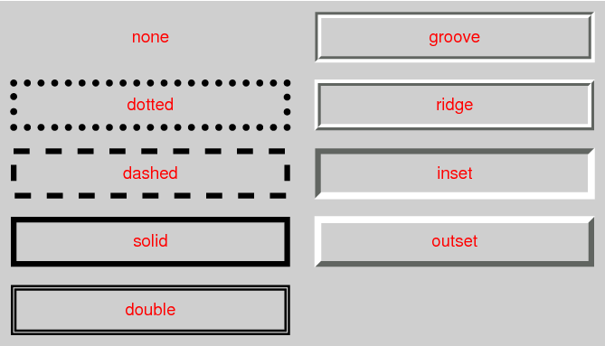
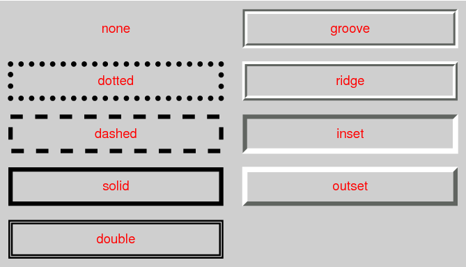
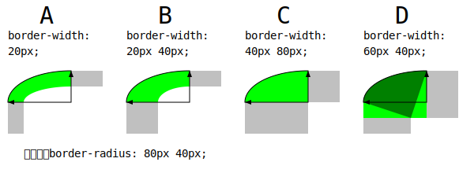
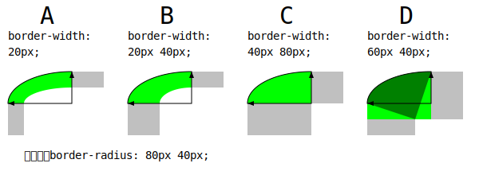

CSS
は、（ HTML や XML などの）構造を備える文書から，
スクリーン, 紙, スピーチ, 等々
の媒体への具現化法を記述するための言語である。
この草案は、~border（境界線）と背景（ background ）に関係する CSS Level 3 の特色機能を包含する。
それは、
CSS Level 1 [CSS1]
上に構築された
CSS Level 2 [CSS21]
の機能性を含み，それを拡張する。
Level 2 からの主要な拡張には、［
画像による~border,
複数の背景を伴う~box,
丸められた隅を伴う~box,
影を伴う~box
］がある。
CSS is a language for describing the rendering of structured documents (such as HTML and XML) on screen, on paper, in speech, etc. This draft contains the features of CSS level 3 relating to borders and backgrounds. It includes and extends the functionality of CSS level 2 [CSS21], which builds on CSS level 1 [CSS1]. The main extensions compared to level 2 are borders consisting of images, boxes with multiple backgrounds, boxes with rounded corners and boxes with shadows.
この~moduleは、以前の２つの草案
CSS3 Backgrounds と CSS3 Border
を置き換える。
This module replaces two earlier drafts: CSS3 Backgrounds and CSS3 Border.
次の特色機能はリスク下にあり，実装者から十分な関心が得られなかった場合、 CR 期間 内に取下げられる可能性があります：
box-shadow プロパティの~animation
The following features are at-risk and may be dropped at the end of the CR period if there has not been enough interest from implementers: animatability of ‘box-shadow’
CSS WG は、この~moduleのための
課題一覧
を維持管理しています。
CSS Backgrounds and Borders Level 3
のための
テスト一式
と実装報告が勧告候補の段階
— 少なくとも ３ヶ月間, 2012 年 6 月 25 日 まで —
に開発される予定です。
詳細は勧告候補からの昇格基準を見よ。
The CSS WG maintains an issues list for this module. A test suite and implementation report for CSS Backgrounds and Borders Level 3 will be developed during the Candidate Recommendation phase, which will last a minimum of three months, and at least until 25 July 2012. See the section “CR exit criteria” for more details.
この仕様に対する以前の草案からの変更点は、変更点の節に挙げられています。
The changes to this specification since the previous drafts are listed in the “Changes” section.
1. 序論
この節は参考である。
◎
This subsection is not normative.
一連の要素が
`CSS ~box~model$
`CSS21$r
に従って描画されるとき，各 要素は全く表示されないか, または
1 個以上の矩形状の~boxとして整形されるかになる。
各~boxは［
矩形状の内容~区画,
内容を囲う~paddingの帯,
~paddingを囲う~border区画,
~borderの外側の~margin
］を持つ。
（~marginは実際には負にもなり得る
【すなわち，~margin辺は~border辺の内側に入り得る】
が，背景や~borderには波及しない。）
◎
When elements are rendered according to the CSS box model [CSS21], each element is either not displayed at all, or formatted as one or more rectangular boxes. Each box has a rectangular content area, a band of padding around the content, a border around the padding, and a margin outside the border. (The margin may actually be negative, but margins have no influence on the background and border.)
`box^dgm
~boxの各種~区画とその外縁の辺（ edge ）を示す模式図（この図は、 CSS2.1 Box Model `CSS21$r にも説明されている。）
◎
The various areas and edges of a typical box. (This diagram is explained in the CSS2.1 Box Model chapter [CSS21].)
この~moduleの各種~propは、［
~borderの装飾
］, および［［
内容, ~padding, ~border
］各~区画の背景
］について取り扱う。
加えて，~boxには，
`box-shadow$p ~propによる落影~効果も与え得る。
◎
The properties of this module deal with the decoration of the border area and with the background of the content, padding and border areas. Additionally the box may be given a "drop-shadow" effect with the ‘box-shadow’ property.
要素を複数の~boxに分断する必要があるときは、
`box-decoration-break$p `CSS-BREAK-3$r
が，~borderと背景を 種々の~boxに分割する方法を定義する（要素は、いくつかの［
行／~col／頁
］に渡り，複数の~boxに分断され得る）。
◎
If an element is broken into multiple boxes, ‘box-decoration-break’ [CSS-BREAK-3] defines how the borders and background are divided over the various boxes. (An element can result in more than one box if it is broken at the end of a line, at the end of a column or at the end of a page; and continued in the next line, column or page.)
［
背景, ~border, 影
］の相対的な積層~順序は、この~moduleにて与えられる。
これらの層と, 他の描画~内容との相互作用については、
`CSS21$r の 付録 E `積層~文脈の詳説$を見よ。
◎
The relative stacking order of backgrounds, borders, and shadows is given in this module. For how these layers interact with other rendered content, see Appendix E “Elaborate description of Stacking Contexts” in [CSS21].
この仕様は、`CSS21$r による
CSS ~prop定義~規約
に従う。
◎
This specification follows the CSS property definition conventions from [CSS21].
2.1. ~module間の相互作用
この~moduleは、 `CSS21$r 8.5, 14.2 節にて定義された 背景と~borderの特色機能を，置き換え, 拡張する。
◎
This module replaces and extends the background and border features defined in [CSS21] sections 8.5 and 14.2.
この~moduleにおけるすべての~propは、
`first-letter$pe 疑似要素にも適用される。
`background-*$p ／ `border-*-radius$p
~propは、
`first-line$pe 疑似要素に適用される。
~UAは、 `border-image-*$p や `box-shadow$p ~propを
`first-line$pe 疑似要素に適用してもよい（要求はされない）が，
`border-color/style/width^p ~propを
`first-line$pe に適用してはならない。
`CSS21$r
◎
All properties in this module apply to the ::first-letter pseudo-element. The background properties and border-radius properties also apply to the ::first-line pseudo-element. The UA may (but is not required to) apply the border-image or ‘box-shadow’ properties to ::first-line. The UA must not apply the border-color/style/width properties to ::first-line. [CSS21]
2.2. 値~型
`image@t
値~型は、
`image$t = `uri^t
として，この仕様にて定義される。
◎
The <image> value type is defined by this specification as <image> = <uri>. …
CSS は、~style間の遷移を~animateさせる方法を含ませるものと予期されている（
CSS Transitions module `CSS3-TRANSITIONS$r の
~animatableなプロパティ値~型
節が、［
異なる種類の値が遷移の間に補間される方法
］を定義するものと予期されている。）
その先取りとして、この~moduleは，各~propの定義表に “~animation” の項目を含ませ，その~propの値が［
~animateし得るかどうか, および その方法
］についても指定する。
◎
It is expected that CSS will include ways to animate transitions between styles. (The section “Animation of property types” of the CSS Transitions module [CSS3-TRANSITIONS] is expected to define how different kinds of values are interpolated during a transition.) In anticipation of that, this module includes a line “Animatable” for each property, which specifies whether and how values of the property can be animated.
3. 背景
各~boxは，背景~層を持つ。
それは、（既定の）全部的に透明になるか，または色やいくつかの画像で埋めれる。
各種 `background-*$p ~propは，利用する［
色（ `background-color$p ）や画像（ `background-image$p ）
］および，それらの［
~size, 位置, 敷詰め方法, 等々
］を与える方法を指定する。
◎
Each box has a background layer that may be fully transparent (the default), or filled with a color and/or one or more images. The background properties specify what color (‘background-color’) and images (‘background-image’) to use, and how they are sized, positioned, tiled, etc.
これらの `background-*$p ~propは 継承-はされないが、 `background-color$p の初期値が `transparent^v なので，親~boxの背景は既定では透過することになる。
◎
The background properties are not inherited, but the parent box's background will shine through by default because of the initial ‘transparent’ value on ‘background-color’.
3.1. 複数の背景~画像による多層化
CSS3 においては、~boxの背景は，複数の
`層@
（ layer ）を持ち得る。
層の枚数は、 `background-image$p ~propに供された~comma区切りの値の個数から決定される。
値 `none^v に対しても，依然として 層は作成されることに注意。
◎
The background of a box can have multiple layers in CSS3. The number of layers is determined by the number of comma-separated values in the ‘background-image’ property. Note that a value of ‘none’ still creates a layer.
他の各種 `background-*$p ~prop（一部を除く）も，同様に~comma区切りの値†からなる~listを値にとり，同じ順序で各 層に対応付けられる。
各 画像は、同じ層に対応する これらの値に従って，~sizeされ, 位置され, 敷詰められる。
【† ~prop値~全体や他のより細分化された成分値と区別する記述を容易にするため、この訳では，】
これらの値を指して、
`層値@
と呼ぶ。
層値~listの中の層~数を超える部分の層値は利用されない。
~propに指定された層値の個数が層~数に満たない場合、~UAは，その個数が十分に足るまで 層値~listを繰返して，使用値を計算し~MUST。
◎
Each of the images is sized, positioned, and tiled according to the corresponding value in the other background properties. The lists are matched up from the first value: excess values at the end are not used. If a property doesn't have enough comma-separated values to match the number of layers, the UA must calculate its used value by repeating the list of values until there are enough.
例えば、次の一連の宣言：
◎
For example, this set of declarations:
background-image: url(flower.png), url(ball.png), url(grass.png);
background-position: center center, 20% 80%, top left, bottom right;
background-origin: border-box, content-box;
background-repeat: no-repeat;
は、次の宣言
—
`background-position$p 値の余分な`層値$が落とされ，
`background-origin$p と `background-repeat$p
に対する未指定の層値が補填された宣言
— と、正確に同じ効果になる：
◎
has exactly the same effect as this set with the extra position dropped and the missing values for ‘background-origin’ and ‘background-repeat’ filled in (emphasized for clarity):
background-image: url(flower.png), url(ball.png), url(grass1.png);
background-position: center center, 20% 80%, top left;
background-origin: border-box, content-box, border-box;
background-repeat: no-repeat, no-repeat, no-repeat;
~list内の最初の画像が利用者に最も近い層になり、次の画像がその背後に塗られ，等々となる。
背景~色も（もし在れば），他のすべての層の背後に塗られる。
◎
The first image in the list is the layer closest to the user, the next one is painted behind the first, and so on. The background color, if present, is painted below all of the other layers.
注記：
`border-image-*$p も、背景になる画像を定義し得る。
それは， `background-*$p ~propから作成される背景より手前に塗られる。
◎
Note that the border-image properties can also define a background image, which, if present, is painted on top of the background created by the background properties.
この~propは、要素の
背景~色
を設定する。
色はどの背景~画像よりも背後に描かれる。
◎
This property sets the background color of an element. The color is drawn behind any background images.
◎
Example:
h1 { background-color: #F00 } /* 背景を赤色に設定する。 */
背景~色の塗り区画は、［
最も背後の背景~画像~層
］に対応する［
`background-clip$p の`層値$
］に従って，外側が切取られる。
◎
The background color is clipped according to the ‘background-clip’ value associated with the bottom-most background image layer.
3.3. 画像~source： `background-image^p ~prop
`●名^ `background-image@p
`●値^ `bg-image$t#
`●初^ `none^v
`●適^ すべての要素
`●継^ されない
`●百^ 利用不可
`●媒^ 視覚的
`●算^
指定値。
ただし， URI は絶対~化される。
◎
as specified, but with URIs made absolute
`●ア^ 離散的
`●表終^
この~propは、要素に対する（何枚かの）背景~画像を設定する。
最初の`層値$による画像が（利用者から見て）最も手前に描かれ，後続する層値による各 画像は 先行する層値による画像の背後に描かれる。
ここで：
◎
This property sets the background image(s) of an element. Images are drawn with the first specified one on top (closest to the user) and each subsequent image behind the previous one. Where
`bg-image@t = `image$t | `none$v
値
`none@v
は、 1 枚の画像~層として数えられつつ，何も描かない。
画像として機能しないものも、同様に 1 層に数えられつつ，何も描かない
— 例えば、画像が［
空（横幅または縦幅がゼロ）／
~downloadできない ／
表示し得ない（形式が未~support）
］ときなど。
◎
A value of ‘none’ counts as an image layer but draws nothing. An image that is empty (zero width or zero height), that fails to download, or that cannot be displayed (e.g., because it is not in a supported image format) likewise counts as a layer but draws nothing.
`background-image$p と他の `background-*$p ~propの各 `層値$から，背景~画像~層がどの様に形成されるかについては、`複数の背景~画像による多層化$を見よ。
◎
See the section “Layering multiple background images” for how ‘background-image’ interacts with other comma-separated background properties to form each background image layer.
作者は、背景~画像を設定するときは，画像が可用でない状況下でも~text色との~contrastは保全されるように， `background-color$p も指定するべきである。
◎
When setting a background image, authors should also specify a ‘background-color’ that will preserve contrast with the text for when the image is unavailable.
~accessibilityの理由から、作者は、重要な情報を供する際に，背景~画像ばかりに頼るような手法をとるべきでない。
Web 内容を~accessし易くするための指針 F3
`WCAG20$r
を見よ。
~graphic的でない呈示の下では，画像は~accessし得ず、また，高~contrast表示モード下では，背景~画像の表示が特別にオフにされることもある。
◎
For accessibility reasons, authors should not use background images as the sole method of conveying important information. See Web Content Accessibility Guideline F3 [WCAG20]. Images are not accessible in non-graphical presentations, and background images specifically might be turned off in high-contrast display modes.
注記：
CSS においては、 `content$p ~propにより，~style的な前景~画像を提供し得る。
（意味論的に重要な前景~画像は、文書~markupを通して提供されるべきである
— 例えば HTML の <img> ~tagなど。）
◎
Note that stylistic foreground images can be provided in CSS with the content property. (Semantically-important foreground images should be provided in the document markup, e.g. with the <img> tag in HTML.)
注記：
画像の一部分を取り出して表示させる用途に，
媒体~素片識別子
を利用できる。
CSS Images
~moduleが、画像~形式のための~fallback構文を提供し，画像~表示のための追加の制御を含めることになる。
◎
Media fragments can be used to display a portion of an image. The CSS Images module will provide fallback syntax for image formats and include additional controls for image display.
背景~画像を指定するいくつかの例：
◎
Some examples specifying background images:
body { background-image: url("marble.svg") }
p { background-image: none }
div { background-image: url(tl.png), url(tr.png) }
注記：
実装は、可視でない画像（例えば，他の全部的に不透明な画像の背後にあるものなど）を［
~downloadしない／描かない
］ように最適化してよい。
◎
Implementations may optimize by not downloading and drawing images that are not visible (e.g., because they are behind other, fully opaque images).
3.4. 画像の敷詰法： `background-repeat^p ~prop
`●名^ `background-repeat@p
`●値^ `repeat-style$t#
`●初^ `repeat^v
`●適^ すべての要素
`●継^ されない
`●百^ 利用不可
`●媒^ 視覚的
`●算^
各 `層値$が［
各 次元に対応する 2 個の~keyword
］であるような、~list
◎
A list, each item consisting of: two keywords, one per dimension
`●ア^ 離散的
`●表終^
背景~画像が，~sizeされ,
位置された後の，敷詰め方法を指定する。
ここで：
◎
Specifies how background images are tiled after they have been sized and positioned. Where
`repeat-style$t に対する単独の成分による各種 値は、次の表の 2 列目に与える値に算出される：
◎
Single values for <repeat-style> have the following meanings:
指定値
算出値
`repeat-x@v
`repeat no-repeat^v
◎
Computes to ‘repeat no-repeat’.
`repeat-y@v
`no-repeat repeat^v
◎
Computes to ‘no-repeat repeat’.
`repeat$v
`repeat repeat^v
◎
Computes to ‘repeat repeat’.
`space$v
`space space^v
◎
Computes to ‘space space’
`round$v
`round round^v
◎
Computes to ‘round round’
`no-repeat$v
`no-repeat no-repeat^v
◎
Computes to ‘no-repeat no-repeat’
`repeat-style$t が 2 個の値からなる場合の各~keyword値は、順に［
横方向, 縦方向
］に対する敷詰め方法を与える。
次の様に：
◎
If a <repeat-style> value has two keywords, the first one is for the horizontal direction, the second for the vertical one, as follows:
`repeat@v
画像は、この方向に，`背景~塗り区画$を覆い尽くすまで必要なだけ繰返される。
◎
The image is repeated in this direction as often as needed to cover the background painting area.
`space@v
画像は、`背景~位置決~区画$に収まる限り，切取られずに繰返された上で、最初と最後の画像が区画の両端に接するように，均等に~~間隔が~~空けられる。
`背景~塗り区画$が`背景~位置決~区画$より大きければ、`背景~塗り区画$を埋めるまで~patternが繰返されることになる。
`background-position$p の対応する`層値$は、この方向については，無視される
— ただし，この方向において画像 2 枚分に足る空間がない場合、画像は 1 枚だけ置かれ，
`background-position$p が この方向における画像の位置を決定する。
◎
The image is repeated as often as will fit within the background positioning area without being clipped and then the images are spaced out to fill the area. The first and last images touch the edges of the area. If the background painting area is larger than the background positioning area, then the pattern repeats to fill the background painting area. The value of ‘background-position’ for this direction is ignored, unless there is not enough space for two copies of the image in this direction, in which case only one image is placed and ‘background-position’ determines its position in this direction.
`round@v
画像は`背景~位置決~区画$に収まる限り，できるだけ多く繰返されるが、整数枚で埋め尽くせない場合は，そうなる様に再拡縮される。
`background-size$p に示されている公式を見よ。
`背景~塗り区画$が`背景~位置決~区画$より大きければ、`背景~塗り区画$を埋め尽くすまで~patternが繰返されることになる。
◎
The image is repeated as often as will fit within the background positioning area. If it doesn't fit a whole number of times, it is rescaled so that it does. See the formula under ‘background-size’. If the background painting area is larger than the background positioning area, then the pattern repeats to fill the background painting area.
`no-repeat@v
画像は 1 度だけ置かれ、この方向には繰返されない。
◎
The image is placed once and not repeated in this direction.
2 個の~keywordがいずれも `no-repeat$v でない，ならば、`背景~塗り区画$の全体が敷詰められることになる
— 縦または横に 1 本だけ帯状に伸ばされるのではなく。
◎
Unless one of the two keywords is ‘no-repeat’, the whole background painting area will be tiled, i.e., not just one vertical strip and one horizontal strip.
いくつかの例：
◎
Example(s):
body {
background: white url("pendant.png");
background-repeat: repeat-y;
background-position: center;
}
`bg-repeat^dgm
`repeat-y$v による効果：
1 枚の背景~画像が中央~寄せにされ,
その~~上下に複製が繰返されて，要素の背後に縦方向の帯を作る。
◎
The effect of ‘repeat-y’: One copy of the background image is centered, and other copies are put above and below it to make a vertical band behind the element.
例：
◎
Example(s):
body {
background-image: url(dot.png) white;
background-repeat: space
}
`bg-space^dgm
`background-repeat$p と他の `background-*$p ~propの各 `層値$から，背景~画像~層がどの様に形成されるかについては、`複数の背景~画像による多層化$を見よ。
◎
See the section “Layering multiple background images” for how ‘background-repeat’ interacts with other comma-separated background properties to form each background image layer.
◎
If background images are specified, this property specifies whether they are fixed with regard to the viewport (‘fixed’) or scroll along with the element (‘scroll’) or its contents (‘local’). The property's value is given as a comma-separated list of <attachment> keywords where
`attachment@t = `scroll$v | `fixed$v | `local$v
`fixed@v
背景は表示域に固定される。
（表示域を持たない）頁~媒体においては、`頁~box$に固定され，したがって毎~頁ごとに再現される。
表示域は各~viewにつき 1 個に限られることに注意。
要素が~scrolling-mechanism（`overflow^p ~prop `CSS21$r を見よ）を備えていたとしても、 `fixed$v による背景は，要素と伴に移動することはない。
◎
The background is fixed with regard to the viewport. In paged media where there is no viewport, a ‘fixed’ background is fixed with respect to the page box and therefore replicated on every page. Note that there is only one viewport per view. Even if an element has a scrolling mechanism (see the ‘overflow’ property [CSS21]), a ‘fixed’ background doesn't move with the element.
`local@v
背景は要素の内容に固定される。
要素が~scrolling-mechanismを備えているならば、背景は，要素の内容と伴に~scrollする。
また，`背景~塗り区画$と`背景~位置決~区画$は、それらの枠を成す~border区画ではなく，要素の~scrollable区画に相対的になる。
~scrollable区画は ~borderを含まないので、~scroll可能な要素においては、
`background-clip$p に対する値 `border-box$v は， `padding-box$v と同じに扱われてよい。
◎
The background is fixed with regard to the element's contents: if the element has a scrolling mechanism, the background scrolls with the element's contents, and the background painting area and background positioning area are relative to the scrollable area of the element rather than to the border framing them. Because the scrollable area does not include the border area, for scrollable elements the ‘border-box’ value of ‘background-clip’ may be treated the same as ‘padding-box’.
`scroll@v
背景は，要素~自身に固定され、その内容と伴には~scrollしない（実質的に，要素の~borderに留められる）。
◎
The background is fixed with regard to the element itself and does not scroll with its contents. (It is effectively attached to the element's border.)
画像が表示域（または頁~box）に固定されたとしても，それが可視になる部分は要素の`背景~塗り区画$に限られる。
他の場合は切取られない（そのような場合のふるまいは，`特別な要素の背景$に）。
したがって，画像は、敷詰められるのでない限り，不可視になり得る。
◎
Even if the image is fixed, it is still only visible when it is in the background painting area of the element or otherwise unclipped. (See “The backgrounds of special elements” for the cases when background images are not clipped.) Thus, unless the image is tiled, it may be invisible.
下の例は、要素が~scrollされても表示域に “貼り付く” ような，縦に無限に連なる帯を作成する
◎
This example creates an infinite vertical band that remains “glued” to the viewport when the element is scrolled.
body {
background: red url("pendant.gif");
background-repeat: repeat-y;
background-attachment: fixed;
}
`fixed$v による背景を（例えば~hardware的な限界により）~supportしない~UAは、~keyword `fixed$v を伴う宣言を無視するべきである。
例えば：
◎
User agents that do not support ‘fixed’ backgrounds (for example due to limitations of the hardware platform) should ignore declarations with the keyword ‘fixed’. For example:
body {
/* すべての~UA用： */
background: white url(paper.png) scroll;
/* 背景の固定も可能な~UA用： */
background: white url(ledger.png) fixed;
}
h1 {
/* すべての~UA用： */
background: silver;
/* 背景の固定も可能な~UA用： */
background: url(stripe.png) fixed, white url(ledger.png) fixed;
}
`background-attachment$p と他の `background-*$p ~propの各 `層値$から，背景~画像~層がどの様に形成されるかについては、`複数の背景~画像による多層化$を見よ。
◎
See the section “Layering multiple background images” for how ‘background-attachment’ interacts with other comma-separated background properties to form each background image layer.
3.6. 画像の位置決： `background-position^p ~prop
`●名^ `background-position@p
`●値^ `position$t#
`●初^ `0% 0%^v
`●適^ すべての要素
`●継^ されない
`●百^
`背景~位置決~区画$の~sizeから 背景~画像の~sizeを 引いた 結果に相対的 — ~textを見よ。
◎
refer to size of background positioning area minus size of background image; see text
`●媒^ 視覚的
`●算^
各 値が［
左上~原点からの，［
横, 縦
］~offsetによる~pair
］であるような，値の~list。
この~offsetは，［
絶対~長さと百分率
］の組合せとして与えられる。
◎
A list, each item consisting of: a pair of offsets (horizontal and vertical) from the top left origin each given as a combination of an absolute length and a percentage
`●ア^
`長さ, 百分率, または calc 式$からなる`単純~list$による，`繰返可能な~list$として
◎
as repeatable list of simple list of length, percentage, or calc
`●表終^
この~propは、何枚かの背景~画像が指定されている下で，各 画像の，対応する`背景~位置決~区画$における（~resize後の）初期~位置を指定する。
◎
If background images have been specified, this property specifies their initial position (after any resizing) within their corresponding background positioning area.
1 〜 2 個の値が与えられた下での［
最初／ 2 番目
］の値に対する長さや百分率は、［
横／縦
］の位置（または~offset）を表現する。
ここでの `percentage$t や `length$t 値は、［
背景~画像の左上~隅
］の，［
`背景~位置決~区画$の左上~隅
］からの~offsetを表現する。
◎
If only one value is specified, the second value is assumed to be ‘center’. If two values are given, a length or percentage as the first value represents the horizontal position (or offset) and a length or percentage as the second value represents the vertical position (or offset). <percentage> and <length> values here represent an offset of the top left corner of the background image from the top left corner of the background positioning area.
注記：
~keywordによる~pairは順不同である一方、~keywordと［
長さ／百分率
］の組合せでは，順序は入れ替えられない。
したがって、 `center left^v は妥当であるが， `50% left^v は無効になる。
◎
Note that a pair of keywords can be reordered while a combination of keyword and length or percentage cannot. So ‘center left’ is valid while ‘50% left’ is not.
3 〜 4 個の値が与えられた下では、その中の各［
`percentage$t ／ `length$t
］は~offsetを表現し，その起点となる辺を指定する~keywordが先行していなければならない。
例えば
`background-position^p: `bottom 10px right 20px^v
は、［［
下辺から上へ `10px^v
］ ［
右辺から左へ `20px^v
］］~offsetされた所を表現する。
値が 3 個の場合の未指定の~offsetは、ゼロと見なされる。
◎
If three or four values are given, then each <percentage> or<length> represents an offset and must be preceded by a keyword, which specifies from which edge the offset is given. For example, ‘background-position: bottom 10px right 20px’ represents a ‘10px’ vertical offset up from the bottom edge and a ‘20px’ horizontal offset leftward from the right edge. If three values are given, the missing offset is assumed to be zero.
値の［
正／負
］は、`背景~位置決~区画$の辺から［
内方／外方
］への~offsetを表現する。
◎
Positive values represent an offset inward from the edge of the background positioning area. Negative values represent an offset outward from the edge of the background positioning area.
次の宣言は、左上~隅からの［
横, 縦
］~offsetを~~明示的に与える：
◎
The following declarations give the stated (horizontal, vertical) offsets from the top left corner:
background-position: left 10px top 15px; /* 10px, 15px */
background-position: left top ; /* 0px, 0px */
background-position: 10px 15px; /* 10px, 15px */
background-position: left 15px; /* 0px, 15px */
background-position: 10px top ; /* 10px, 0px */
background-position: left top 15px; /* 0px, 15px */
background-position: left 10px top ; /* 10px, 0px */
`percentage$t
百分率~値による［
横／縦
］~offsetは、［
`背景~位置決~区画$の［
横幅／縦幅
］から
背景~画像の［
横幅／縦幅
］を引いた結果
］に相対的になる。
この画像~sizeは `background-size$p にて与えられる。
◎
A percentage for the horizontal offset is relative to (width of background positioning area - width of background image). A percentage for the vertical offset is relative to (height of background positioning area - height of background image), where the size of the image is the size given by ‘background-size’.
例えば、値~pair `0% 0%^v に対しては、画像の左上~隅が，通例は（ `background-origin$p を特に指定しない限り） ~boxの~padding辺による区画の左上~隅に揃えらる。
値~pair `100% 100%^v に対しては、画像の右下~隅が，区画の右下~隅に揃えらる。
値~pair `75% 50%^v に対しては、［
画像の左上~隅から 75% 右, 50% 下の地点
］が，［
区画の左上~隅から 75% 右, 50% 下の地点
］に揃えらる（下図）。
◎
For example, with a value pair of ‘0% 0%’, the upper left corner of the image is aligned with the upper left corner of, usually, the box's padding edge. A value pair of ‘100% 100%’ places the lower right corner of the image in the lower right corner of the area. With a value pair of ‘75% 50%’, the point 75% across and 50% down the image is to be placed at the point 75% across and 50% down the area.
`bg-pos^dgm
`background-position^p: `75% 50%^v
の意味を表す図式。
◎
Diagram of the meaning of ‘background-position: 75% 50%’.
`length$t
長さ値は、固定の長さによる~offsetを与える。
例えば，値~pair `2cm 1cm^v に対しては、画像は，その左上~隅が，`背景~位置決~区画$の左上~隅から［
2cm 右,
1cm 下
］の所に~~位置するように置かれる。
◎
A length value gives a fixed length as the offset. For example, with a value pair of ‘2cm 1cm’, the upper left corner of the image is placed 2cm to the right and 1cm below the upper left corner of the background positioning area.
`top@v
1 〜 2 個の値が与えられた下では、縦~位置に対する `0%^v に算出される。
他の場合、その次の~offset値の起点を上辺にする。
◎
Computes to ‘0%’ for the vertical position if one or two values are given, otherwise specifies the top edge as the origin for the next offset.
`right@v
1 〜 2 個の値が与えられた下では、横~位置に対する `100%^v に算出される。
他の場合、その次の~offset値の起点を右辺にする。
◎
Computes to ‘100%’ for the horizontal position if one or two values are given, otherwise specifies the right edge as the origin for the next offset.
`bottom@v
1 〜 2 個の値が与えられた下では、縦~位置に対する `100%^v に算出される。
他の場合、その次の~offset値の起点を下辺にする。
◎
Computes to ‘100%’ for the vertical position if one or two values are given, otherwise specifies the bottom edge as the origin for the next offset.
`left@v
1 〜 2 個の値が与えられた下では、横~位置に対する `0%^v に算出される。
他の場合、その次の~offset値の起点を左辺にする。
◎
Computes to ‘0%’ for the horizontal position if one or two values are given, otherwise specifies the left edge as the origin for the next offset.
`center@v
横~位置が指定されていなければ，横~位置に対する `50%^v （すなわち `left 50%^v ）に算出され、他の場合は，縦~位置に対する `50%^v （すなわち `top 50%^v ）に算出される。
◎
Computes to ‘50%’ (‘left 50%’) for the horizontal position if the horizontal position is not otherwise specified, or ‘50%’ (‘top 50%’) for the vertical position if it is.
下の一連の `background$p 略式~prop宣言は、各種~keywordを利用して，
`background-position$p に百分率による値を~~明示的に設定する。
◎
The following ‘background’ shorthand declarations use keywords to set ‘background-position’ to the stated percentage values.
body { background: url("banner.jpeg") right top } /* 100% 0% */
body { background: url("banner.jpeg") top center } /* 50% 0% */
body { background: url("banner.jpeg") center } /* 50% 50% */
body { background: url("banner.jpeg") bottom } /* 50% 100% */
下の例では、画像は，（繰返されずに）表示域の右下~隅に寄せられる。
◎
In the example below, the (single) image is placed in the lower-right corner of the viewport.
背景~位置を、左上でない隅から相対的にすることもできる。
例えば，次のものは、背景~画像を［
下端から `10px^v, 右端から `3em^v
］の所に置く。
◎
Background positions can also be relative to other corners than the top left. E.g., the following puts the background image 10px from the bottom and 3em from the right:
background-position: right 3em bottom 10px
`background-position$p と他の `background-*$p ~propの各 `層値$から，背景~画像~層がどの様に形成されるかについては、`複数の背景~画像による多層化$を見よ。
◎
See the section “Layering multiple background images” for how ‘background-position’ interacts with other comma-separated background properties to form each background image layer.
背景が塗られる区画となる
`背景~塗り区画@
を決定する。
`層値$の構文は次で与えられる：
◎
Determines the background painting area, which determines the area within which the background is painted. The syntax of the property is given with
背景は~border~box内に塗られる。
◎
The background is painted within (clipped to) the border box.
`padding-box@v
背景は~padding~box内に塗られる。
◎
The background is painted within (clipped to) the padding box.
`content-box@v
背景は内容~box内に塗られる。
◎
The background is painted within (clipped to) the content box.
（いずれも、~boxの外側は切取られる。）
◎
↑
注記：
根~要素については、異なる`背景~塗り区画$を持つので， `background-clip$p ~propの効果はない。
`特別な要素の背景$を見よ。
◎
Note that the root element has a different background painting area, and thus the ‘background-clip’ property has no effect when specified on it. See “The backgrounds of special elements.”
注記：
背景は常に、~border（もしあれば）の 背後 に描かれる。
`CSS21$r の `積層~文脈の詳説$を見よ。
◎
Note that the background is always drawn behind the border, if any. See “Elaborate description of Stacking Contexts” in [CSS21].
`border-radius$p による`背景~塗り区画$の形状への影響については、
`隅の形状付け$を見よ。
◎
See the section on Corner Shaping for how ‘border-radius’ affects the shape of the background painting area.
`background-clip$p と他の `background-*$p ~propの各 `層値$から，背景~画像~層がどの様に形成されるかについては、`複数の背景~画像による多層化$を見よ。
◎
See the section “Layering multiple background images” for how ‘background-clip’ interacts with other comma-separated background properties to form each background image layer.
単独の~boxとして描画される要素に対しては、その
`背景~位置決~区画@
を指定する。
複数の~boxとして描画される要素（例えば，複数~行に渡るときの各 行の行内~boxや, 複数~頁に渡るときの各 頁の~box）に対しては、 `box-decoration-break$p `CSS-BREAK-3$r が，対象になる~boxを指定し，それらの`背景~位置決~区画$を決定する。
◎
For elements rendered as a single box, specifies the background positioning area. For elements rendered as multiple boxes (e.g., inline boxes on several lines, boxes on several pages), specifies which boxes ‘box-decoration-break’ [CSS-BREAK-3] operates on to determine the background positioning area(s).
`padding-box@v0
画像~位置を~padding~boxに相対的にする（~boxが 1 つだけなら［
`0 0^v ／ `100% 100%^v
］が~padding辺の［
左上~隅／右下~隅
］に対応する）。
◎
The position is relative to the padding box. (For single boxes ‘0 0’ is the upper left corner of the padding edge, ‘100% 100%’ is the lower right corner.)
`border-box@v0
画像~位置を`~border~box$に相対的にする。
◎
The position is relative to the border box.
`content-box@v0
画像~位置を内容~boxに相対的にする。
◎
The position is relative to the content box.
この画像~層に対応する［
`background-attachment$p の`層値$
］が `fixed$v の場合、この~propは効果を持たず，`背景~位置決~区画$は `初期~包含塊$ `CSS21$r になる。
◎
If the ‘background-attachment’ value for this image is ‘fixed’, then this property has no effect: in this case the background positioning area is the initial containing block [CSS21].
注記：
［
`background-clip$p が `padding-box$v,
`background-origin$p が `border-box$v0,
`background-position$p が `top left^v （初期値）
］で, 要素の~border線幅が非ゼロの場合、背景~画像の［
上側, 左側
］の部分が切取られることになる。
◎
Note that if ‘background-clip’ is ‘padding-box’, ‘background-origin’ is ‘border-box’, ‘background-position’ is ‘top left’ (the initial value), and the element has a non-zero border, then the top and left of the background image will be clipped.
`background-origin$p と他の `background-*$p ~propの各 `層値$から，背景~画像~層がどの様に形成されるかについては、`複数の背景~画像による多層化$を見よ。
◎
See the section “Layering multiple background images” for how ‘background-origin’ interacts with other comma-separated background properties to form each background image layer.
3.9. 画像の~sizing： `background-size^p ~prop
`●名^ `background-size@p
`●値^ `bg-size$t#
`●初^ `auto$v
`●適^ すべての要素
`●継^ されない
`●百^ 記述を見よ
`●媒^ 視覚的
`●算^
指定値。
ただし，長さは絶対~化され，省略された `auto$v ~keywordは補填される。
◎
as specified, but with lengths made absolute and omitted ‘auto’ keywords filled in
`●ア^
［
`長さ, 百分率, または calc 式$, および~keyword
］からなる`単純~list$による，`繰返可能な~list$として
◎
as repeatable list of simple list of length, percentage, or calc and keywords
`●表終^
一連の背景~画像の~sizeを指定する。
ここで：
◎
Specifies the size of the background images. Where
画像を
— その内在~縦横比があれば, それを保全しつつ —
その横幅と縦幅の両者とも背景~位置決~区画に収まり切るような，最大~sizeに拡縮する。
◎
Scale the image, while preserving its intrinsic aspect ratio (if any), to the largest size such that both its width and its height can fit inside the background positioning area.
画像を
— その内在~縦横比があれば, それを保全しつつ —
その横幅と縦幅の両者とも背景~位置決~区画を覆い切るような，最小~sizeに拡縮する。
◎
Scale the image, while preserving its intrinsic aspect ratio (if any), to the smallest size such that both its width and its height can completely cover the background positioning area.
2 値のうち最初の値が 画像の横幅を与え， 2 番目の値が 縦幅を与える。
成分~値が 1 個だけ与えられた場合、 2 番目の成分は `auto^v に見なされる。
◎
The first value gives the width of the corresponding image, the second value its height. If only one value is given the second is assumed to be ‘auto’.
百分率は、`背景~位置決~区画$に相対的になる。
◎
A percentage is relative to the background positioning area.
一方の次元のみ `auto^v 値の場合、画像の内在~縦横比と他方の次元の~sizeを用いて解決されるが、それができない場合は、 `100%^v と見なされる。
◎
An ‘auto’ value for one dimension is resolved by using the image's intrinsic ratio and the size of the other dimension, or failing that, using the image's intrinsic size, or failing that, treating it as 100%.
2 値とも `auto^v 値の場合、画像の内在［
横幅または縦幅
］があれば，それが利用されるべきであり、未指定の次元があれば，前段落の `auto^v と同様にふるまうが、画像が内在［
横幅, 縦幅
］いずれも持たない場合の~sizeは、 `contain$v と同様に決定される。
◎
If both values are ‘auto’ then the intrinsic width and/or height of the image should be used, if any, the missing dimension (if any) behaving as ‘auto’ as described above. If the image has neither an intrinsic width nor an intrinsic height, its size is determined as for ‘contain’.
どの成分値にも，負の値は許容されない。
◎
Negative values are not allowed.
いくつかの例を示す。
次の例では、背景~画像が内容~区画を覆い切るように，各 次元について独立に画像を伸張する。
◎
Here are some examples. The first example stretches the background image independently in both dimensions to completely cover the content area:
次の例は、 2 個の複製が縦方向にちょうど収まるように，画像が伸張される。
縦横比は保全される：
◎
The second example stretches the image so that exactly two copies fit horizontally. The aspect ratio is preserved:
p {
background-image: url(tubes.png);
background-size: 50% auto;
background-origin: border-box }
次の例は、背景~画像が縦横とも `15px^v 幅になる様に強制する：
◎
This example forces the background image to be 15 by 15 pixels:
para {
background-size: 15px 15px;
background-image: url(tile.png)}
次の例は、画像の`内在~size$を利用する。
CSS Level 2 までは、このふるまいのみが可能である。
◎
This example uses the image's intrinsic size. Note that this is the only possible behavior in CSS level 1 and 2.
body {
background-size: auto; /* 既定 */
background-image: url(flower.png) }
次の例では、画像の縦幅が，指定値の `30%^v から
— ちょうど整数枚の画像が収まるように —
33.3% に切り上げられる。
30% のままだと、 3 枚の画像に加えて， 4 枚目の画像も部分的に現れることになる。
横幅については、背景~区画の横幅の 20% になるので，この切り上げは生じない。
◎
The following example rounds the height of the image to 33.3%, up from the specified value of 30%. At 30%, three images would fit entirely and a fourth only partially. After rounding, three images fit. The width of the image is 20% of the background area width and is not rounded.
片方または両方の次元において， `background-repeat$p が `round$v の場合、~UAは更に，それらの次元において，上述による結果の画像~sizeを次のように調整し~MUST：
◎
If ‘background-repeat’ is ‘round’ for one (or both) dimensions, there is a second step. The UA must scale the image in that dimension (or both dimensions) so that it fits a whole number of times in the background positioning area. In the case of the width (height is analogous):
If X ≠ 0 is the width of the image after step one and W is the width of the background positioning area, then the rounded width X' = W / round(W / X) where round() is a function that returns the nearest natural number (integer greater than zero).
加えて、［
片方の次元では `background-repeat$p が `round$v
］, かつ［
他方の次元では `background-size$p が `auto$v
］の場合、画像を元の縦横比に戻すように，他方の次元について拡縮する。
◎
If ‘background-repeat’ is ‘round’ for one dimension only and if ‘background-size’ is ‘auto’ for the other dimension, then there is a third step: that other dimension is scaled so that the original aspect ratio is restored.
次の例の背景~画像は、その`内在~size$で示される：
◎
In this example the background image is shown at its intrinsic size:
div {
background-image: url(image1.png);
background-repeat: repeat; /* 既定 */
background-size: auto /* 既定 */
}
次の例の背景~画像は、横幅は `3em^v に, 縦幅は元の縦横比率が保たれるように拡縮される：
◎
In the following example, the background is shown with a width of 3em and its height is scaled proportionally to keep the original aspect ratio:
次の例では、背景~画像の横幅は，背景の横幅を整数枚で埋め尽くせる様に， `3em^v なるべくに近い~sizeに拡縮され、縦幅は，元の縦横比率が保たれるように拡縮される：
◎
In the following example, the background is shown with a width of approximately 3em: scaled so that it fits a whole number of times in the width of the background. The height is scaled proportionally to keep the original aspect ratio:
div {
background-image: url(image3.png);
background-repeat: round repeat;
background-size: 3em auto
}
次の例の背景~画像は、横幅が `3em^v に，縦幅は［
背景の縦幅を整数枚で埋め尽くしつつ,
元の縦横比を保つ縦幅になるべく近い
］~sizeに拡縮される：
◎
In the following example, the background image is shown with a width of 3em and a height that is either the height corresponding to that width at the original aspect ratio or slightly less:
div {
background-image: url(image4.png);
background-repeat: repeat round;
background-size: 3em auto
}
次の例の背景~画像は、縦幅は［
背景の縦幅を整数枚で埋め尽くしつつ,
`4em^v になるべく近い
］~sizeに，横幅は［
背景の横幅を整数枚で埋め尽くしつつ, ［
縦幅 `4em^v と元の縦横比から得られる横幅
］になるべく近い
］~sizeに拡縮される：
◎
In the following example, the background image is shown with a height of approximately 4em: scaled slightly so that it fits a whole number of times in the background height. The width is the approximately the width that correspond to a 4em height at the original aspect ratio: scaled slightly so that it fits a whole number of times in the background width.
div {
background-image: url(image5.png);
background-repeat: round; /* = round round */
background-size: auto 4em
}
背景~画像の横幅または縦幅がゼロに解決される場合、その画像は表示されなくなる（画像が透明であったときと同じ効果になる）。
◎
If the background image's width or height resolves to zero, this causes the image not to be displayed. (The effect is the same as if it had been a transparent image.)
`background-size$p と他の `background-*$p ~propの各 `層値$から，背景~画像~層がどの様に形成されるかについては、`複数の背景~画像による多層化$を見よ。
◎
See the section “Layering multiple background images” for how ‘background-size’ interacts with other comma-separated background properties to form each background image layer.
注記：
背景~色（
<‘`background-color$p’>
）は、 `final-bg-layer$t （最後の背景~層）においてのみ許可される。
◎
Note that a color is permitted in <final-bg-layer>, but not in <bg-layer>.
The ‘background’ property is a shorthand property for setting most background properties at the same place in the style sheet. The number of comma-separated items defines the number of background layers. Given a valid declaration, for each layer the shorthand first sets the corresponding layer of each of ‘background-image’, ‘background-position’, ‘background-size’, ‘background-repeat’, ‘background-origin’, ‘background-clip’ and ‘background-attachment’ to that property's initial value, then assigns any explicit values specified for this layer in the declaration. Finally ‘background-color’ is set to the specified color, if any, else set to its initial value.
If one <box> value is present then it sets both ‘background-origin’ and ‘background-clip’ to that value. If two values are present, then the first sets ‘background-origin’ and the second ‘background-clip’.
例~s:
◎
Examples:
次の例の中の最初の規則では、
`background-color$p にのみ値（ `red^v ）が与えられているので、他の各種~propは，それぞれの初期値に設定される。
2 番目の規則では、多数の~propが指定されている：
◎
In the first rule of the following example, only a value for ‘background-color’ has been given and the other individual properties are set to their initial values. In the second rule, many individual properties have been specified.
body { background: red }
p { background: url("chess.png") 40% / 10em gray
round fixed border-box; }
最初の規則は、次と等価になる：
◎
The first rule is equivalent to:
次の例は、
背景~色（ `#CCC^v ）と
背景~画像（ `url(metal.jpg)^v ）
を設定する。
画像は要素の横幅~全体にきっちり~~収まる様に拡縮される。
◎
The following example shows how a both a background color (#CCC) and a background image (url(metal.jpg)) are set. The image is rescaled to the full width of the element:
E { background: #CCC url("metal.jpg") top left / 100% auto no-repeat}
等価性を示す別の例：
◎
Another example shows equivalence:
div { background: padding-box url(paper.jpg) white center }
div {
background-color: white;
background-image: url(paper.jpg);
background-repeat: repeat;
background-attachment: scroll;
background-position: center;
background-clip: padding-box;
background-origin: padding-box;
background-size: auto auto;
}
~comma区切りによる複数の層値からなる宣言：
◎
The following declaration with multiple, comma-separated values
background: url(a.png) top left no-repeat,
url(b.png) center / 100% 100% no-repeat,
url(c.png) white;
上の宣言は、次と等価になる：
◎
is equivalent to
background-image: url(a.png), url(b.png), url(c.png);
background-position: top left, center, top left;
background-repeat: no-repeat, no-repeat, repeat;
background-clip: border-box, border-box, border-box;
background-origin: padding-box, padding-box, padding-box;
background-size: auto auto, 100% 100%, auto auto;
background-attachment: scroll, scroll, scroll;
background-color: white;
3.11. 特別な要素の背景
文書の~canvasは，文書が描画される無限の平面である `CSS21$r 。
~canvasに対応する要素は存在しないので、~canvasに対する~style付けを可能にするため、 CSS では，根~要素（ HTML の場合は <body> 要素）の背景を以下に述べる様に~canvasに伝播させる。
［
~canvasに利用される背景に利用される要素
］に対する~boxが生成されない場合（例えば，根~要素の `display^p が `none^v のとき）、~canvasの背景は透明になる。
◎
The document canvas is the infinite surface over which the document is rendered. [CSS21] Since no element corresponds to the canvas, in order to allow styling of the canvas CSS propagates the background of the root element (or, in the case of HTML, the <body> element) as described below. However, if no boxes are generated for the element whose background would be used for the canvas (for example, if the root element has ‘display: none’), then the canvas background is transparent.
注記：
不可視の要素でも，~boxを生成し得る。
例えば，要素の `visibility^p が `hidden^v で `display^p は `none^v でない場合、その~boxは 生成され，その背景が~canvasに利用される。
◎
Note that an element might be invisible, but still generate boxes. For example, if the element has ‘visibility: hidden’ but not ‘display: none’, boxes are generated for it and its background is used for the canvas.
~canvas背景が不透明でない場合に見えるものは UA に依存する。
◎
If the canvas background is not opaque, what shows through is UA-dependent.
3.11.1. ~canvas背景と根~要素
根~要素の背景は，
~canvas
の背景になり、その`背景~塗り区画$は，~canvas全体を覆うように拡張される
【すなわち、背景は，背景~位置決~区画の外側で切取られない】
。
しかしながら，どの画像も、それらが根~要素~単独に塗られたかのように，相対的に~sizeされ, 位置される（言い換えれば、`背景~位置決~区画$は，根~要素に対するときと同様に決定される）。
根~要素がこの背景を~~塗り直すことはない
— すなわち，その背景の使用値は、 `transparent^v になる。
◎
The background of the root element becomes the background of the canvas and its background painting area extends to cover the entire canvas. However, any images are sized and positioned relative to the root element as if they were painted for that element alone. (In other words, the background positioning area is determined as for the root element.) The root element does not paint this background again, i.e., the used value of its background is transparent.
3.11.2. ~canvasの背景と HTML <body> 要素
根~要素が［
HTML `HTML^e `HTML401$r ／
XHTML `html^e `XHTML11$r
］要素である文書に対しては：
根~要素~上の［
`background-image$p の算出値が `none^v で,
`background-color$p の算出値が`transparent^v
］の場合、~UAは，各種 `background-*$p ~propの算出値を継承させる際には，根~要素の子である最初の［
HTML `BODY^e ／ XHTML `body^e
］要素から伝播させ~MUST。
`BODY^e 要素~上の `background-*$p ~propの使用値は、それぞれの初期値であり、伝播される値は，それらが根~要素上に指定されたかのように扱われる。
HTML 文書の作者には、~canvasに背景を指定する際には，
`HTML^e 要素ではなく,
`BODY^e 要素に指定することが推奨される。
◎
For documents whose root element is an HTML HTML element [HTML401] or an XHTML html element [XHTML11]: if the computed value of ‘background-image’ on the root element is ‘none’ and its ‘background-color’ is ‘transparent’, user agents must instead propagate the computed values of the background properties from that element's first HTML BODY or XHTML body child element. The used values of that BODY element's background properties are their initial values, and the propagated values are treated as if they were specified on the root element. It is recommended that authors of HTML documents specify the canvas background for the BODY element rather than the HTML element.
これらの規則に従い、次の HTML 文書の下層~canvasは “marble” 背景を持つことになる：
◎
According to these rules, the canvas underlying the following HTML document will have a “marble” background:
<!DOCTYPE html PUBLIC '-//W3C//DTD HTML 4.0//EN'
>
<html>
<head>
<title>Setting the canvas background</title>
<style type="text/css">
body { background: url("http://example.org/marble.png") }
</style>
</head>
<body>
<p>My background is marble.</p>
</body>
</html>
3.11.3. `first-line^pe 疑似要素の背景
`first-line$pe 疑似要素は、背景の目的においては，
行内level要素と同様に扱われる（ `CSS21$r の 5.12.1 節を見よ）。
例えば、左寄せの下での最初の行に対する背景が，右端~marginまで拡張されることにはならない。
◎
The ‘::first-line’ pseudo-element is like an inline-level element for the purposes of the background (see section 5.12.1 of [CSS21]). That means, e.g., that in a left-justified first line, the background does not necessarily extend all the way to the right margin.
4. ~border（境界線）
~borderは、定義済みの線style（実線, 二重線, 点線, 立体的な線, 等々）か, または
画像することもできる。
前者の場合、種々の~propにより，~borderの［
線style（ `border-style$p ）,
線色（ `border-color$p ）,
線幅（太さ）（ `border-width$p ）
］が定義される。
◎
The border can either be a predefined style (solid line, double line, dotted line, pseudo-3D border, etc.) or it can be an image. In the former case, various properties define the style (‘border-style’), color (‘border-color’), and thickness (‘border-width’) of the border.
これらの~propは、`border-style$p ~propに指定された~borderの前景~色を設定する。
◎
These properties set the foreground color of the border specified by the border-style properties.
`border-color$p は、他の `border-*-color^p ~propに対応する略式~propである。
一連の成分値は、~borderの各 側の線色を`時計回りに設定する$。
◎
‘Border-color’ is a shorthand for the four ‘border-*-color’ properties. The four values set the top, right, bottom and left border, respectively. A missing left is the same as right, a missing bottom is the same as top, and a missing right is also the same as top.
これらの~propは、`~border画像$が無い限り，~border~styleを設定する。
◎
These properties set the style of the border, unless there is a border image
`border-style$p は、他の `border-*-style^p ~propに対応する略式~propである。
一連の成分値は、~borderの各 側の線styleを`時計回りに設定する$。
◎
‘Border-style’ is a shorthand for the other four. Its four values set the top, right, bottom and left border respectively. A missing left is the same as right, a missing bottom is the same as top, and a missing right is also the same as top.
~borderは，なし。
線色と線幅は無視される（すなわち，~borderの線幅 は 0 ）。
これにより、 `border-image-width$p の初期値も，ゼロに解決されるようになることに注意。
◎
No border. Color and width are ignored (i.e., the border has width 0). Note this means that the initial value of ‘border-image-width’ will also resolve to zero.
`hidden@v
`border-collapse$p が `collapse^v にされた~table `CSS21$r に対しては，`~borderの競合-解決$の規則におけるふるまいが異なることを除いて、
`none^v と同じ。
◎
Same as ‘none’, but has different behavior in the border conflict resolution rules for border-collapsed tables [CSS21].
`dotted@v
点線 — 小丸の並び。
◎
A series of round dots.
`dashed@v
端が角ばった破線。
◎
A series of square-ended dashes.
`solid@v
一重の実線。
◎
A single line segment.
`double@v
二重線。
個々の線の太さは指定されないが、全体的な太さは， `border-width$p に等しく~MUST。
◎
Two parallel solid lines with some space between them. (The thickness of the lines is not specified, but the sum of the lines and the space must equal ‘border-width’.)
`groove@v
~canvasに彫られているような見かけ（この効果は、概して， `border-color$p より少し明るい線と暗い線で “影” を形作って得られる）。
◎
Looks as if it were carved in the canvas. (This is typically achieved by creating a “shadow” from two colors that are slightly lighter and darker than the ‘border-color’.)
`ridge@v
~canvasに盛り上げられているかのような見かけ。
◎
Looks as if it were coming out of the canvas.
`inset@v
~borderの内部が~canvasから凹んでいるかのような見かけ。
`~borderの~collapsing~model$ `CSS21$r においては `ridge$v として扱われる。
◎
Looks as if the content on the inside of the border is sunken into the canvas. Treated as ‘ridge’ in the collapsing border model. [CSS21]
`outset@v
~borderの内部が~canvasから盛り上がっているかのような見かけ。
`~borderの~collapsing~model$ `CSS21$r においては `groove$v として扱われる。
◎
Looks as if the content on the inside of the border is coming out of the canvas. Treated as ‘groove’ in the collapsing border model. [CSS21]
~borderは、要素の背景の手前に描かれるが，（重なる所では）要素の内容の背後に描かれる。
◎
Borders are drawn in front of the element's background, but behind the element's content (in case it overlaps).
`borderstyles^dgm
種々の定義済み~border~styleによる描画~例
◎
Example renderings of the predefined border styles.
注記：
黒色や白色に近い~border色は、要求される “立体” 効果を作成するためには，中間~色と異なる色の計算が必要になる。
◎
Note: Border colors close to black or white may need different color calculations than colors in between in order to create the required “3D” effect.
注記：
点線を成す小丸の間隔や 破線を成す各~線分の 間隔／長さ を制御する手段は規定されていない。
実装には、隅の所で対称になる様に間隔を選ぶことが望まれる。
◎
Note: There is no control over the spacing of the dots and dashes, nor over the length of the dashes. Implementations are encouraged to choose a spacing that makes the corners symmetrical.
注記：
この仕様は、異なる線styleによる 2 本の~borderの隅における継ぎ方を定義しない。
また、丸められた隅においては、~paddingが隅の半径より小さくされた場合，隅と内容が重なり得る。
◎
Note: This specification does not define how borders of different styles should be joined in the corner. Also note that rounded corners may cause the corners and the contents to overlap, if the padding is less than the radius of the corner.
値［
`thin@v,
`medium@v,
`thick@v
］に対応する具体的な~長さは，規定されないが、~UAは，これらの値を［
文書を通して一定に保ち, かつ
`thin^v ≤ `medium^v ≤ `thick^v
の順に大きくする
］ものとする。
~UAは例えば、太さを， `font-size^p ~propに対する `medium^v 値に依存させることもできる
— その値が `17px^v 以下になるときは、順に［
`1px^v, `3px^v, `5px^v
］にするなど。
`length$t に対する負~値は無効である。
◎
The lengths corresponding to ‘thin’, ‘medium’ and ‘thick’ are not specified, but the values are constant throughout a document and thin ≤ medium ≤ thick. A UA could, e.g., make the thickness depend on the ‘medium’ font size: one choice might be 1, 3 & 5px when the ‘medium’ font size is 17px or less. Negative <length> values are not allowed.
`border-width$p は、他の `border-*-width^p ~propを設定する略式~propである。
一連の成分値は、~borderの各 側の線幅を`時計回りに設定する$。
◎
‘Border-width’ is a shorthand that sets the four ‘border-*-width’ properties. If it has four values, they set top, right, bottom and left in that order. If left is missing, it is the same as right; if bottom is missing, it is the same as top; if right is missing, it is the same as top.
注記：
線幅の初期値は `medium$v であるが、【他が指定されない限り】その使用値は，線styleの初期値が `none^v なので `0^v になる。
◎
Note that the initial width is ‘medium’, but the initial style is ‘none’ and therefore the used width is 0.
~borderの線幅の使用値が `0^v であるとき，~borderは不在であるとも記される。
◎
When the used width of the border is 0, we say that the border is absent.
これらは、~boxの上右下左~borderの［
線幅, 線style, 線色
］を設定するための略式~propである。
省略された値は、それぞれの初期値に設定される。
◎
This is a shorthand property for setting the width, style, and color of the top, right, bottom, and left border of a box. Omitted values are set to their initial values.
`border$p ~propは、~boxの~borderの 4 辺すべてを同じ［
線幅, 線style, 線色
］に設定するための略式~propである。
略式~prop `margin^p, `padding^p と異なり、
`border$p ~propは、 ~borderの 4 辺それぞれに異なる値を設定できない。
そのためには、他の `border-*^p ~propを利用する必要がある。
◎
The ‘border’ property is a shorthand property for setting the same width, color, and style for all four borders of a box. Unlike the shorthand ‘margin’ and ‘padding’ properties, the ‘border’ property cannot set different values on the four borders. To do so, one or more of the other border properties must be used.
`border$p 略式~propは、 `border-image$p も その初期値に再設定する。
したがって，作者には、【他は同じ優先度の】より前に現れている~border設定群を上書きする際に、他の略式~propや個々の~propでなく，この略式~propを用いることが推奨される。
これにより，新たな~styleが反映されるように `border-image$p も再設定される。
◎
The ‘border’ shorthand also resets ‘border-image’ to its initial value. It is therefore recommended that authors use the ‘border’ shorthand, rather than other shorthands or the individual properties, to override any border settings earlier in the cascade. This will ensure that ‘border-image’ has also been reset to allow the new styles to take effect.
注記：
CSS Working Group は、 `border$p 略式~propを， CSS の将来~levelにおいても，他のすべての `border-*^p ~propを再設定するものと意図している。
仮に、~glyphによる~borderを許容する `border-characters^p ~propが導入されたなら， `border$p 略式~propは それも再設定することになる。
作者は，~borderの再設定-に `border$p 略式~propを用いれば、将来どの様な~propが導入されようとも， “白紙状態” に戻されることが保証される。
◎
The CSS Working Group intends for the ‘border’ shorthand to reset all border properties in future levels of CSS as well. For example, if a ‘border-characters’ property is introduced in the future to allow glyphs as borders, it will also be reset by the ‘border’ shorthand. By using the ‘border’ shorthand to reset borders, authors can be guaranteed a “blank canvas” no matter what properties are introduced in the future.
例えば，下の最初の規則は、後続の 5 個の規則~一式と等価になる。
◎
For example, the first rule below is equivalent to the set of five rules shown after it:
p { border: solid red }
p {
border-top: solid red;
border-right: solid red;
border-bottom: solid red;
border-left: solid red;
border-image: none;
}
これらの~propは，機能が重複する部分があるので、規則を指定する順序も重要になる。
◎
Since, to some extent, the properties have overlapping functionality, the order in which the rules are specified is important.
次の例を考える：
◎
Consider this example:
blockquote {
border-color: red;
border-left: double;
color: black
}
上の例では、他の~borderの線色を `red^v （赤色）にする中で，左辺だけ `black^v （黒色）にする。
これは `border-left$p が［
線幅, 線style, 線色
］を設定することに起因する。
`border-left$p ~propには，線色が与えられていないので、
`color^p ~propが `border-left$p ~propより後の所で設定されていても，
左辺の線色は `color^p ~propから得られることになる。
◎
In the above example, the color of the left border is black, while the other borders are red. This is due to ‘border-left’ setting the width, style, and color. Since the color value is not given by the ‘border-left’ property, it will be taken from the ‘color’ property. The fact that the ‘color’ property is set after the ‘border-left’ property is not relevant.
5. 隅の丸め
5.1. 曲線~半径： `border-*-radius^p ~prop
`●名^
`border-top-left-radius@p,
`border-top-right-radius@p,
`border-bottom-right-radius@p,
`border-bottom-left-radius@p
`●値^ `length-percentage$t{1,2}
`●初^ `0^v
`●適^ すべての要素（ただし，注釈文を見よ）
`●継^ されない
`●百^
`~border~box$の，対応する寸法に相対的
◎
Refer to corresponding dimension of the border box.
`●媒^ 視覚的
`●算^
それぞれが［
百分率または絶対~化された `length$t
］である，2 個の値
◎
two absolute <length> or percentages
`●ア^
2 個の
`長さ, 百分率, または calc 式$
値として
`●表終^
`●名^ `border-radius@p
`●値^
`length-percentage$t{1,4} [ / `length-percentage$t{1,4} ]?
`●初^ 個々の~propを見よ
`●適^
すべての要素（ただし，注釈文を見よ）
`●継^ されない
`●百^
`~border~box$の，対応する寸法に相対的
◎
Refer to corresponding dimension of the border box.
`●媒^ 視覚的
`●算^ 個々の~propを見よ
`●ア^ 個々の~propを見よ
`●表終^
`border-*-radius^p ~propの 2 個の［
長さ／百分率
］値は，外縁の~border辺の隅~形状（下の図式を見よ）を定義し、順に
四分~楕円の［
横, 縦
］半径を定義する。
2 番目の値が省略された場合、最初の値から複製される。
いずれの長さもゼロの場合、隅は丸められず，角ばった状態になる。
［
横／縦
］半径に対する百分率は，`~border~box$の［
横幅／縦幅
］に相対的になる。
◎
The two length or percentage values of the ‘border-*-radius’ properties define the radii of a quarter ellipse that defines the shape of the corner of the outer border edge (see the diagram below). The first value is the horizontal radius, the second the vertical radius. If the second value is omitted it is copied from the first. If either length is zero, the corner is square, not rounded. Percentages for the horizontal radius refer to the width of the border box, whereas percentages for the vertical radius refer to the height of the border box. Negative values are not allowed.
どの成分値にも，負の値は許容されない。
◎
↑
`corner^dgm
隅の曲率は、
`border-*-radius^p に対する 2 成分による値
`58px 37px^v
（または `border-radius^p 略式~propに対する値 `58px / 37px^v ）から定義されている。
◎
The two values of ‘border-top-left-radius: 55pt 25pt’ define the curvature of the corner.
次の例は、幅 `15em^v × 高さ `10em^v の~~楕円に近い形に描かれる。
◎
This example draws ovals of 15em wide and 10em high:
`border-radius$p 略式~propは、 4 隅すべての `border-*-radius^p ~propをまとめて設定する。
~slashで区切られて値が与えられた場合、~slashの［
前／後
］の一連の成分値が［
横／縦
］半径を設定する。
~slashが無い場合、両者の半径を等しく設定する。
一連の成分値は、各 隅の半径を，左上から（すなわち，［
左上, 右上, 右下, 左下
］を順に上右下左~側に対応させた下で）`時計回りに設定する$。
◎
The ‘border-radius’ shorthand sets all four ‘border-*-radius’ properties. If values are given before and after the slash, then the values before the slash set the horizontal radius and the values after the slash set the vertical radius. If there is no slash, then the values set both radii equally. The four values for each radii are given in the order top-left, top-right, bottom-right, bottom-left. If bottom-left is omitted it is the same as top-right. If bottom-right is omitted it is the same as top-left. If top-right is omitted it is the same as top-left.
~padding辺（~borderの内縁）の半径は、~borderの外縁の半径から，対応する~borderの太さを引いたものになる。
この結果が負になる場合、内縁の半径はゼロにされる（その場合、内縁の曲線の中心は~borderの外縁の曲線の中心に一致しなくなる）。
同様に、内容~辺の半径は，~padding辺の半径から対応する~paddingの太さを引いた結果を ゼロ以上に切り上げたものになる。
従って、連接する 2 本の~borderの太さが異なる隅では、曲った領域における~borderと~paddingの太さは、それらを補間することにより得られ，滑らかに遷移することになる。
◎
The padding edge (inner border) radius is the outer border radius minus the corresponding border thickness. In the case where this results in a negative value, the inner radius is zero. (In such cases its center might not coincide with that of the outer border curve.) Likewise the content edge radius is the padding edge radius minus the corresponding padding, or if that is negative, zero. The border and padding thicknesses in the curved region are thus interpolated from the adjoining sides, and when two adjoining borders are of different thicknesses the corner will show a smooth transition between the thicker and thinner borders.
~border~style（
`solid$v, `dotted$v, `inset$v,
等々）は，何であれ、~borderの曲線をなぞる。
◎
All border styles (‘solid’, ‘dotted’, ‘inset’, etc.) follow the curve of the border.
`smooth-radius^dgm
隅で出会う~borderの太さが異なるとき（図左）と, ~borderの太さが隅の半径より大きいとき（図右）の，丸めによる効果。
◎
The effect of a rounded corner when the two borders it connects are of unequal thickness (left) and the effect of a rounded corner on borders that are thicker than the radius of the corner (right).
`smooth-radius-1^dgm
`smooth-radius-2^dgm
【参考：利用中の~browserによる dotted, ridge ~styleによる描画】
注記：
隅の外縁の曲線の中心が対角~側の~padding辺を超える（すなわち，対角の~border区画~内に入る）場合、内縁の曲線は，全部的な四分~楕円にならなくなる。
◎
Note that if the center of a corner's outer curve is past an opposite padding edge (in the border area of a side opposite the corner), the inner curve will not be a full quarter ellipse.
`partial-curve^dgm
`border-radius^p による曲線が対辺の~borderまで延伸する所では、~padding辺の弧が 90° を下回る。
◎
Where the border-radius curve extends into the opposite sides' borders, the arc of the padding edge is less than 90°.
`partial-curve-1^dgm
【参考：利用中の~browserによる描画】
【次の定義は、他の仕様から利用される：】
~border辺の外側にあるときの~margin辺の各 隅の各 半径は、対応する~marginの太さ `w^var を~border半径 `R^var に加えて計算される。
ただし、 `R^var が小さいときには，隅をより角張らせる
— すなわち，比率［
`r^var ＝ `R^var ÷ `w^var
］が 1 より小さいときは， `w^var に［
1 − ( 1 − `r^var )3
］を掛けて調整する。
◎
The margin edge, being outside the border edge, calculates its radius by adding the corresponding margin thickness to each border radius. However, in order to create a sharper corner when the border radius is small, when the border radius is less than the margin, the margin is multiplied by the proportion 1 + (r-1)3, where r is the ratio of the border radius to the margin, in calculating the corner radii of the margin box shape.
5.3. 隅による切取り
（ `border-image$p とは別に）
~boxの背景は、（ `background-clip$p により決定される）適切な曲線で外側が切取られる。
［
~border／~padding
］辺で切取られる他の効果（ `overflow^p が `visible^v でない下での，~overflowする内容など）も，その曲線で切取られ~MUST。
その場合、置換要素の内容も，常に内容~辺の曲線で刈り取られる。
◎
A box's backgrounds, but not its border-image, are clipped to the appropriate curve (as determined by ‘background-clip’). Other effects that clip to the border or padding edge (such as ‘overflow’ other than ‘visible’) also must clip to the curve. The content of replaced elements is always trimmed to the content edge curve.
また、~border辺の曲線の外側は，要素のための~pointer~eventを受容しない。
◎
Also, the area outside the curve of the border edge does not accept pointer events on behalf of the element.
注記：
`border-radius$p は要素の対話可能面積を削減するので、作者は，残りの面積が目的の~platformに推奨される下限に適合することを~~確保すべきである。
特に、 `border-radius$p が利用されるとき，推奨される最小 touch target ~sizeに適合するためには、より大きい横幅や縦幅が要求され得る。
◎
As ‘border-radius’ reduces the interactive area of an element authors should make sure the remaining interactive area conforms to recommended minima for the platforms they target; in particular, conforming to recommended minimum touch target sizes may require larger widths and heights when ‘border-radius’ is used.
次の例は、内容が隅を~overflowしないような，適切な~paddingを追加する。
~borderが無くても 依然として，背景の隅は丸められることになる。
◎
This example adds appropriate padding, so that the contents do not overflow the corners. Note that there is no border, but the background will still have rounded corners.
~borderにおいて［
色／~style
］が遷移する区間は、［
~borderの両~半径, および内縁~曲線の中心
］を包含するような，~~最小の矩形に入ら~MUST（中心は、いずれかの~border半径が対応する `border-*-width$p より小さい場合，~padding辺の隅に~~位置し得る）。
◎
Color and style transitions must be contained within the segment of the border that intersects the smallest rectangle that contains both border radii as well as the center of the inner curve (which may be a point representing the corner of the padding edge, if the border radii are smaller than the border-width).
これらの~borderのうち一方の線幅がゼロの場合、他方の~borderが遷移区間の全体を占める。
他の場合、連接する~borderの合間の［
色／~style
］遷移の中点は，［
連続的かつ単調な，［
２つの `border-*-width$p の比率
］の関数
］から得られる，曲線~上の一点に~~位置する。
しかしながら、【この仕様では】［
これらの遷移の外見や，この比率から曲線~上の点に写像する関数
］は定義されない。
◎
If one of these borders is zero-width, then the other border takes up the entire transitional area. Otherwise, the center of color and style transitions between adjoining borders is a point along the curve that is a continuous monotonic function of the ratio of the border widths. However it is not defined what these transitions look like or what function maps from this ratio to a point on the curve.
`transition-region^dgm
上の隅~形状が与えられた下では、［
色／~style
］の遷移は，図の緑色~領域~内に包含され~MUST。
図の D の事例では、矩形は~border半径により定義される内縁~曲線の中心（角張った隅）を含まないので、遷移~領域もその隅を含むように拡げられる。
遷移は，遷移~領域~全体を占め得るが，そうすることは要求されない：
例えば、~styleが `solid$v にされた 2 本の~borderが出会う所の色~遷移の~~範囲は、外縁~半径の先端から内縁~半径の先端で囲まれる領域（図の D では，濃い緑色~領域）のみを占め得る。
◎
Given these corner shapes, color and style transitions must be contained within the green region. In case D the rectangle defined by the border radii does not include the center of the inner curve (which is a sharp corner), so the transition region is expanded to include that corner. Transitions may take up the entire transition region, but are not required to: For example, a gradient color transition between two solid border styles might take up only the region bounded by the tips of the outer radii and the tips of the inner radii (represented in case D by the dark green region).
5.5. 曲線が重なり合う場合
隣接する 2 隅の曲線は、重なり合っては~MUST_NOT：
隣接する 2 隅の~border半径の和が`~border~box$の~sizeを超過するときには、~UAは， 4 隅における~border半径の使用値を，そのどれもが重なり合わなくなるまで 一様な倍率で減量し~MUST。
半径を減量するための~algoは、次で与えられる：
◎
Corner curves must not overlap: When the sum of any two adjacent border radii exceeds the size of the border box, UAs must proportionally reduce the used values of all border radii until none of them overlap. The algorithm for reducing radii is as follows:
Let f = min(Li/Si), where i ∈ {top, right, bottom, left}, Si is the sum of the two corresponding radii of the corners on side i, and Ltop = Lbottom = the width of the box, and Lleft = Lright = the height of the box. If f < 1, then all corner radii are reduced by multiplying them by f.
注記：
この公式は、四分~円を四分~円のまま保ち, 各 隅の半径の大小関係も保つが、すでに十分~小さい半径も減量させ得るので，同じ外見が保たれるべき~borderの外見も変え得る。
◎
Note that this formula ensures that quarter circles remain quarter circles and large radii remain larger than smaller ones, but it may reduce corners that were already small enough, which may make borders of nearby elements that should look the same look different.
曲線が~scrollbarなどの~UI要素に干渉する場合、~UAは更に，影響される隅の半径に限り，その使用値を必要な分だけ減量してよい。
◎
If the curve interferes with UI elements such as scrollbars, the UA may further reduce the used value of the affected border radii (and only the affected border radii) as much as necessary, but no more.
例えば，次の~styleからは：
◎
For example, the borders A of the figure below might be the result of
下図 A のような~borderが得られるであろう。
縦幅（ `2.5em^v ）は、指定された半径（ `0.5em^v ＋ `2.0em^v ）に十分であるが、次の様に縦幅が `2em^v しかない場合：
◎
The height (2.5em) is enough for the specified radii (0.5em plus 2.0em). However, if the height is only 2em,
それらを収めるためには、すべての隅について，係数 0.8 で減量される必要がある。
従って，~border半径の使用値は、図の B の様に［
（ `0.5em^v の代わりに） `0.4em^v,
（ `2em^v の代わりに） `1.6em^v
］になる。
◎
all corners need to be reduced by a factor 0.8 to make them fit. The used border radii thus are 0.4em (instead of 0.5em) and 1.6em (instead of 2em). See borders B in the figure.
`corner-large-mix^dgm
最初に挙げた~styleによる隅の丸め（図左）, および
そこから `height^p だけ `2em^v に変えたものによる隅の丸め（図右）を示す図式。
◎
These rounded corner might be the result of ‘width: 6em; height: 2.5em; border-radius: 0.5em 2em 0.5em 2em’ for A; and ditto but with ‘height: 2em’ for B.
The ‘border-radius’ properties do apply to ‘table’ and ‘inline-table’ elements. When ‘border-collapse’ is ‘collapse’, the UA may apply the border-radius properties to ‘table’ and ‘inline-table’ elements, but is not required to. In this case not only must the border radii of adjacent corners not intersect, but the horizontal and vertical radii of a single corner must not extend past the far border edges of the cell at that corner (i.e. a table corner's border-radius does not affect cells not at that corner). If the computed values of the border radii would cause this effect, then the used values of all the border radii of the table must be reduced by the same factor so that the radii neither intersect nor extend past the border edges of their respective corner cells.
`内部~table要素$における `border-*-radius$p による効果は、この仕様 — CSS ~level 3 — においては未定義であるが、将来~仕様においては定義され得る。
CSS3 ~UAは、 `border-collapse$p が `collapse^v にされた~tableに対しては，その`内部~table要素$に適用される `border-*-radius$p を無視する べきである。
◎
The effect of border-radius on internal table elements is undefined in CSS3 Backgrounds and Borders, but may be defined in a future specification. CSS3 UAs should ignore border-radius properties applied to internal table elements when ‘border-collapse’ is ‘collapse’.
6. ~border画像
作者は、~border~styleに代わって，画像を利用するように指定できる。
この場合、~borderは，［［
`border-image-source$p により指定される画像
］の［
4 辺と 4 隅
］側のへりに接する部分から取り出される画像~片
］によりデザインされる。
これらの画像~片は、`~border画像~区画$の~sizeに収まるように，種々の仕方で
切分けられ, 拡縮され, 伸張され
得る。
この節に挙げる各種 `border-image-*^p ~propは，~layoutには影響しない：
［
~boxや その内容, その周囲の内容
］の~layoutが基づくのは、［
`border-*-width$p, `border-*-style$p
］~propに限られる。
◎
Authors can specify an image to be used in place of the border styles. In this case, the border's design is taken from the sides and corners of an image specified with ‘border-image-source’, whose pieces may be sliced, scaled and stretched in various ways to fit the size of the border image area. The border-image properties do not affect layout: layout of the box, its content, and surrounding content is based on the ‘border-width’ and ‘border-style’ properties only.
次の例は、橙色の菱形が，［
上端／下端
］~borderでは整数個~並べられ, ［
左端／右端
］~borderでは 1 個だけが伸張される~borderを作成する。
4 隅の色は別の色の菱形にされ、菱形~以外の部分は透明にされる。
敷詰め用の画像は、次の様にされている：
◎
This example creates a top and bottom border consisting of a whole number of orange diamonds and a left and right border of a single, stretched diamond. The corners are diamonds of a different color. The image to tile is as follows. Apart from the diamonds, it is transparent:
`border^dgm
画像は `81px^v 平方であり， 9 片に分割される必要がある。
~style規則は次の様になる（この例では等分にする）：
◎
The image is 81 by 81 pixels and has to be divided into 9 equal parts. The style rules could thus be as follows:
より込み入った例を次に示す。
~fallback用の `border-style-*^p との対応関係を示しつつ，~border画像が~borderを超えて拡張される様子を示す。
~border画像には、波状で緑色の, 隅まで拡張する~borderが，描かれている：
◎
This shows a more complicated example, demonstrating how the border image corresponds to the fallback border-style but can also extend beyond the border area. The border image is a wavy green border with an extended corner effect:
`groovy-border-image-slice^dgm
`border-image-source$p による画像は、 `border-image-slice$p による 4 本の断~線により，各~辺から `124px^v の所で切断され、 9 片に分割される。
◎
The ‘border-image-source’ image, with the four ‘border-image-slice’ cuts at 124px dividing the image into nine parts.
しかる後、他の `border-image-*^p ~propが，次の様に それらの~tileの配置に作用する：
◎
The rest of the border properties then interact to lay out the tiles as follows:
`border-image^dgm
すべての `border-image-*^p ~propと，それらが作用する様子を、それらによる効果を伴わない場合の描画も併せて示す図式。
◎
Diagram of all border-image properties and how they interact, and showing the rendering with and without the border-image in effect.
ここでは、 `border-width$p が `12px^v にもかかわらず， `border-image-width$p ~propは `124px^v に算出される。
`~border画像~区画$は，~border~boxから~margin区画へ `31px^v だけ~outset-される。
~border画像を読み込めない（または~UAが~border画像を~supportしない）場合、緑色の二重線（ `double^v ）~borderによる描画に~fallbackする。
◎
Here, even though the border-width is 12px, the ‘border-image-width’ property computes to 124px. The border-image area is then outset 31px from the border-box and into the margin area. If the border-image fails to load (or border images are not supported by the UA), the fallback rendering uses a green double border.
`border$p 略式~propは、 `border-image$p も再設定することに注意。
これにより、すべての~border効果の有無を切り替えるのも容易になる：
◎
Notice that the ‘border’ shorthand resets ‘border-image’. This makes it easy to turn off or reset all border effects:
`●名^ `border-image-source@p
`●値^ `none^v | `image$t
`●初^ `none^v
`●適^
すべての要素 — ただし、［
`border-collapse$p が `collapse^v にされた~tableにおける，`内部~table要素$
］を除く。
◎
All elements, except internal table elements when ‘border-collapse’ is ‘collapse’
`●継^ されない
`●百^ 利用不可
`●媒^ 視覚的
`●算^
`none^v または 絶対~化された画像 URI
◎
‘none’ or the image with its URI made absolute
`●ア^ 離散的
`●表終^
［
`border-*-style$p で与えられる~border~style
］による描画の代わりに利用する画像を指定し、
`border-image-slice$p に `fill^v ~keywordも供されている場合には，要素に対する追加の後景~画像も指定する。
値が `none^v, または画像を表示できない（または~propが適用されない）場合，~border~styleが利用され、そうでなければ，~border~styleによる~borderは描かれず，以下の節に述べるように~border画像が描かれることになる。
◎
Specifies an image to use in place of the rendering specified by the ‘border-style’ properties and, if given the ‘fill’ keyword in ‘border-image-slice’, as an additional image backdrop for the element. If the value is ‘none’ or if the image cannot be displayed (or the property doesn't apply), the border styles will be used; otherwise the element's ‘border-style’ borders are not drawn and the border image is drawn as described in the sections below.
6.2. ~border画像の切分け： `border-image-slice^p ~prop
`●名^ `border-image-slice@p
`●値^
[`number$t | `percentage$t ]{1,4} && `fill$v?
`●初^ `100%^v
`●適^
すべての要素 — ただし、［
`border-collapse$p が `collapse^v にされた~tableにおける，`内部~table要素$
］を除く。
◎
All elements, except internal table elements when ‘border-collapse’ is ‘collapse’
`●継^ されない
`●百^
~border画像の~sizeに相対的
◎
refer to size of the border image
`●媒^ 視覚的
`●算^
それぞれが［
実数, または百分率
］である 4 個の値。
加えて，省略し得る~keyword `fill$v
◎
as four values, each a number or percentage, and optionally a ‘fill’ keyword
`●ア^ 離散的
`●表終^
この~propは、画像を［
4 隅, 4 辺, 真中
］の 9 片に分割するための，画像の各 辺から内方への~offsetを指定する。
`fill$v ~keywordが無い限り、真中の画像~片は破棄される（全部的に透明と見なされる）。
（これは，背景の手前に描かれる — `~border画像の描画法$を見よ。）
◎
This property specifies inward offsets from the top, right, bottom, and left edges of the image, dividing it into nine regions: four corners, four edges and a middle. The middle image part is discarded (treated as fully transparent) unless the ‘fill’ keyword is present. (It is drawn over the background; see Drawing the Border Image.)
一連の成分値は、各 側の~offsetを`時計回りに設定する$。
各~offsetがとり得る各種 値は、次の意味を持つ
【長さ値はとり得ないことに注意】：
◎
When four values are specified, they set the offsets on the top, right, bottom and left sides in that order. If the left is missing, it is the same as the right; if the bottom is missing, it is the same as the top; if the right is missing, it is the same as the top.
`percentage$t
百分率による［
横／縦
］~offsetは、画像の［
横幅／縦幅
］に相対的になる。
◎
Percentages are relative to the size of the image: the width of the image for the horizontal offsets, the height for vertical offsets.
`number$t
~raster画像に対しては，画像~内の画素~数を表現し、~vector画像に対しては，~vector座標を表現する。
◎
Numbers represent pixels in the image (if the image is a raster image) or vector coordinates (if the image is a vector image).
`fill@v
この~keywordが在る場合、真中の~border画像~片も保全される（既定では，破棄され, 空として扱われる）。
◎
The ‘fill’ keyword, if present, causes the middle part of the border-image to be preserved. (By default it is discarded, i.e., treated as empty.)
負の値は無効。
画像~sizeを超える算出値は `100%^v に解釈される。
◎
Negative values are invalid. Computed values larger than the size of the image are interpreted as ‘100%’.
`border-image-slice$p により，互いに対辺になる画像~片は、重なり合うこともある。
左右~offset値に対しては、それらの和が画像~全体の横幅~以上になる場合、［
上辺, 真中, 下辺
］画像は空になり，空でない透明~画像が指定されたのと同じ効果になる。
上下~offset値に対しても，縦横を入れ替えて同様になる。
◎
The regions given by the ‘border-image-slice’ values may overlap. However if the sum of the right and left widths is equal to or greater than the width of the image, the images for the top and bottom edge and the middle part are empty, which has the same effect as if a nonempty transparent image had been specified for those parts. Analogously for the top and bottom values.
切分~~位置を決定するために画像~sizeを要する場合（例えば，`内在~size$を伴わない SVG 画像）、それは，［
`指定size$ なし；
`既定の~obj~size$ ← `~border画像~区画$
］の下で，`既定の~sizing~algo$を利用して~sizeされる。
◎
If the image must be sized to determine the slices (for example, for SVG images with no intrinsic size), then it is sized using the default sizing algorithm with no specified size and the border image area as the default object size.
`slice^dgm
値 `25% 30% 12% 20%^v に対応する断線を示す図式
◎
Diagram illustrating the cuts corresponding to the value ‘25% 30% 12% 20%’
6.3. 描画区画： `border-image-width^p ~prop
`●名^ `border-image-width@p
`●値^
[ `length-percentage$t | `number$t | `auto$v0 ]{1,4}
`●初^ `1^v
`●適^
すべての要素 — ただし、［
`border-collapse$p が `collapse^v にされた~tableにおける，`内部~table要素$
］を除く。
◎
All elements, except table elements when ‘border-collapse’ is ‘collapse’
`●継^ されない
`●百^
`~border画像~区画$の［
横幅／縦幅
］に相対的
◎
Relative to width/height of the border image area
`●媒^ 視覚的
`●算^
それぞれが［
絶対~化された長さ,
百分率,
実数,
`auto$v0 ~keyword,
］のいずれかである， 4 個の値
◎
four values, each a percentage, number, ‘auto’ keyword, or <length> made absolute
`●ア^ 離散的
`●表終^
~border画像は、`~border画像~区画$と呼ばれる区画に描かれる。
その境界は， `border-image-outset$p から決定され、既定においては，`~border~box$と一致する。
◎
The border image is drawn inside an area called the border image area. This is an area whose boundaries by default correspond to the border box, see ‘border-image-outset’.
`border-image-width$p は、`~border画像~区画$を 9 片に分割するための，各 辺からの~offsetを指定する。
一連の成分値は、区画の各 辺から分割~線までの距離を`時計回りに設定する$。
◎
The four values of ‘border-image-width’ specify offsets that are used to divide the border image area into nine parts. They represent inward distances from the the top, right, bottom, and left sides of the area, respectively. If the left width is missing, it is the same as the right; if the bottom is missing, it is the same as the top; if the right is missing, it is the same as the top. Values have the following meanings:
各 成分がとり得る各種 値の意味は：
`percentage$t
百分率による［
横／縦
］~offsetは、`~border画像~区画$の［
横幅／縦幅
］に相対的になる。
◎
Percentages refer to the size of the border image area: the width of the area for horizontal offsets, the height for vertical offsets.
`number$t
実数による値は、対応する `border-*-width$p の算出値の何倍になるかを表現する。
◎
Numbers represent multiples of the corresponding computed border-width.
`auto@v0
`auto^v が指定された場合、`~border画像~区画$の辺~部位の線幅は，対応する画像~片（ `border-image-slice$p を見よ）の内在［
横幅／縦幅
］（いずれか適用し得る方）になる。
画像が必要な`内在~寸法$を持たない場合、対応する `border-*-width$p の算出値が代わりに利用される。
◎
If ‘auto’ is specified then the border image width is the intrinsic width or height (whichever is applicable) of the corresponding image slice (see ‘border-image-slice’). If the image does not have the required intrinsic dimension then the corresponding computed border-width is used instead.
どの成分値にも，負の値は許容されない。
◎
Negative values are not allowed for any ‘border-image-width’ values.
If two opposite ‘border-image-width’ offsets are large enough that they overlap, then the used values of all ‘border-image-width’ offsets are proportionally reduced until they no longer overlap. In mathematical notation: Given Lwidth as the width of the border image area, Lheight as its height, and Wside as the border image width offset for the side side, let f = min(Lwidth/(Wleft+Wright), Lheight/(Wtop+Wbottom)). If f < 1, then all W are reduced by multiplying them by f.
6.4. 辺の張り出し量： `border-image-outset^p ~prop
`●名^ `border-image-outset@p
`●値^
[ `length$t | `number$t ]{1,4}
`●初^ `0^v
`●適^
すべての要素 — ただし、［
`border-collapse$p が `collapse^v にされた~tableにおける，`内部~table要素$
］を除く。
◎
All elements, except internal table elements when ‘border-collapse’ is ‘collapse’
`●継^ されない
`●百^ 利用不可
`●媒^ 視覚的
`●算^
それぞれが［
実数, または絶対~化された長さ
］である， 4 個の値
◎
four values, each a number or <length> made absolute
`●ア^ 離散的
`●表終^
`~border画像~区画@
が`~border~box$を超えて拡張する量を指定する。
一連の成分値は、~borderの各 辺から区画の各 辺への~outsetを`時計回りに設定する$。
◎
The values specify the amount by which the border image area extends beyond the border box. If it has four values, they set the outsets on the top, right, bottom and left sides in that order. If the left is missing, it is the same as the right; if the bottom is missing, it is the same as the top; if the right is missing, it is the same as the top.
`length$t
指定された長さによる~outsetを表現する。
負の値は無効。
◎
Represents an outset of the specified length. Negative values are invalid.
`number$t
対応する `border-*-width$p の算出値の，指定された倍数による~outsetを表現する。
負の値は無効。
◎
Represents an outset of the specified multiple of the corresponding computed border-width. Negative values are invalid.
~border画像の［
`~border~box$の外側に描画される部分
］から~scroll動作が誘発されることはない。
その部分は、~mouse~eventにおいては無いものと見なされ，当該~要素のために~eventを捕捉することもない。
◎
Portions of the border-image that are rendered outside the border box do not trigger scrolling. Also such portions are invisible to mouse events and do not capture such events on behalf of the element.
注記：
画像が~outset-されても，決して~scroll動作を誘発させないが、依然として先祖や表示域の外側で切取られ得る。
◎
Note that, even though they never cause a scrolling mechanism, outset images may still be clipped by an ancestor or by the viewport.
6.5. 画像の敷詰法： `border-image-repeat^p ~prop
`●名^ `border-image-repeat@p
`●値^
[ `stretch$v | `repeat$v0 | `round$v0 | `space$v0 ]{1,2}
`●初^ `stretch$v
`●適^
すべての要素 — ただし、［
`border-collapse$p が `collapse^v にされた~tableにおける，`内部~table要素$
］を除く。
◎
All elements, except internal table elements when ‘border-collapse’ is ‘collapse’
`●継^ されない
`●百^ 利用不可
`●媒^ 視覚的
`●算^
各 次元に対応する 2 個の~keyword
◎
two keywords, one for each axis
`●ア^ 離散的
`●表終^
この~propは、 9 片に分割された~border画像を，`~border画像~区画$の対応する部位に どの様に拡縮して敷詰めるかを指定する。
2 個の~keywordは、順に，~border画像の［
上辺／下辺
］画像, ［
左辺／右辺
］画像に適用される。
`~border画像の描画法$
を見よ。
2 番目の~keywordが不在の場合、最初のものと同じと見なされる。
各種 値の意味は：
◎
This property specifies how the images for the sides and the middle part of the border image are scaled and tiled. The first keyword applies to the horizontal sides, the second to the vertical ones; see Drawing the Border Image. If the second keyword is absent, it is assumed to be the same as the first. Values have the following meanings:
`stretch@v
画像~片は 対応する部位を埋める様に伸張される。
◎
The image is stretched to fill the area.
`repeat@v0
画像~片は 対応する部位を埋める様に敷詰められる（繰返される）。
◎
The image is tiled (repeated) to fill the area.
`round@v0
画像~片は 対応する部位を埋める様に敷詰められる（繰返される）。
整数枚の~tileで埋め尽くせないときは、埋め尽くせる様に画像~片が再拡縮される。
◎
The image is tiled (repeated) to fill the area. If it does not fill the area with a whole number of tiles, the image is rescaled so that it does.
`space@v0
画像~片は 対応する部位を埋める様に敷詰められる（繰返される）。
整数枚の~tileで埋め尽くせないときは、余った空間が~tileの周囲に配分される。
◎
The image is tiled (repeated) to fill the area. If it does not fill the area with a whole number of tiles, the extra space is distributed around the tiles.
~border画像の各 部位への正確な拡縮法と敷詰法は、次~節にて与えられる。
◎
The exact process for scaling and tiling the border-image parts is given in the section below.
6.6. ~border画像の描画法
`border-image-source$p が供する~border画像を
`border-image-slice$p 値により切分けられた 9 片の画像は、次の 4 段階を経て，拡縮され, 位置された上で、`~border画像~区画$の，それぞれに対応する部位
【以下，この節では単に “部位” と記す】
に敷詰められる：
◎
After the border-image given by ‘border-image-source’ is sliced by the ‘border-image-slice’ values, the resulting nine images are scaled, positioned, and tiled into their corresponding border image regions in four steps:
`border-image-width$p に~~収まるように拡縮する：
◎
Scale to ‘border-image-width’.
［
上辺, 下辺
］画像を、その縦横比率を保ちつつ，その縦幅が［
対応する部位の縦幅
］と同じになるように，拡縮する。
◎
The two images for the top and bottom edges are made as tall as the top and bottom border image area parts, respectively, and their width is scaled proportionally.
［
左辺, 右辺
］画像を、その縦横比率を保ちつつ，その横幅が［
対応する部位の横幅
］と同じになるように，拡縮する。
◎
The images for the left and right edge are made as wide as the left and right border image area parts, respectively, and their height is scaled proportionally.
各 隅~画像を、その［
横幅／縦幅
］が，対応する部位の［
縦／横
］に隣接する部位の［
横幅／縦幅
］と同じになるように，拡縮する。
◎
The corner images are scaled to be as wide and as tall as the two border-image edges they are part of.
真中~画像の［
横幅／縦幅
］を，［
上辺／左辺
］画像と同じ係数で拡縮する。
ただし、係数がゼロや無限になる場合，［
下辺／右辺
］画像の拡縮係数で代用し、それもできない場合は拡縮しない。
◎
The middle image's width is scaled by the same factor as the top image unless that factor is zero or infinity, in which case the scaling factor of the bottom is substituted, and failing that, the width is not scaled. The height of the middle image is scaled by the same factor as the left image unless that factor is zero or infinity, in which case the scaling factor of the right image is substituted, and failing that, the height is not scaled.
`border-image-repeat$p に従って拡縮する：
◎
Scale to ‘border-image-repeat’.
値の最初の~keywordは、画像~片の横幅に対する拡縮を行う（縦幅はそのままに）：
`stretch$v
［
上辺, 真中, 下辺
］画像を，その横幅が［
真中~部位の横幅
］と同じになるように拡縮する。
◎
If the first keyword is ‘stretch’, the top, middle and bottom images are further scaled to be as wide as the middle part of the border image area. The height is not changed any further.
`round$v0
［
上辺, 真中, 下辺
］画像を，その横幅の整数倍が［
真中~部位の横幅
］と同じになるように拡縮する。
— ［
`background-repeat$p ~propに対する `round$v 値のとき
］とちょうど同じように。
◎
If the first keyword is ‘round’, the top, middle and bottom images are resized in width, so that exactly a whole number of them fit in the middle part of the border-image area, exactly as for ‘round’ in the ‘background-repeat’ property.
`repeat$v0
`space$v0
［
上辺, 真中, 下辺
］画像には，手を加えない。
◎
If the first keyword is ‘repeat’ or ‘space’, the top, middle, and bottom images are not changed any further.
2 番目の~keywordに対しても，［
左辺, 真中, 右辺
］画像に対し、上述と縦横を入れ替えて同様に行う。
◎
The effects of ‘stretch’, ‘round’, ‘repeat’, and ‘space’ for the second keyword are analogous, acting on the height of the left, middle and right images.
敷詰めの最初の~tile位置を決める：
◎
Position the first tile.
最初の~keywordが `repeat$v0 の場合、［
上辺, 真中, 下辺
］画像を，対応する部位の中で 横方向において中央~寄せに置く。
他の場合、左~寄せに置く。
◎
If the first keyword is ‘repeat’, the top, middle, and bottom images are centered horizontally in their respective areas. Otherwise the images are placed at the left edge of their respective parts of the border-image area.
2 番目の~keywordが `repeat$v0 の場合、［
左辺, 真中, 右辺
］画像を，対応する部位の中で 縦方向において中央~寄せに置く。
他の場合、上~寄せに置く。
◎
If the second keyword is ‘repeat’, the left, middle, and right images are centered vertically in their respective areas. Otherwise the images are placed at the top edge of their respective parts of the border-image area.
敷詰めて描く：
◎
Tile and draw.
各 画像~片を、それぞれに対応する部位を埋める様に敷詰める。
すべての画像~片を，通常の~borderと同様に 同じ積層~levelの中で，背景~層の直ぐ手前の層に描く。
◎
The images are then tiled to fill their respective areas. All images are drawn at the same stacking level as normal borders: immediately in front of the background layers.
`space$v0 に対しては、部分的に現れる~tileは すべて破棄し，余った空間を各~tileの周囲に均等に配分する — すなわち、［［
最初／最後
］の~tileの［
前／後
］の隙間,
各~tileの合間の隙間
］を均等にする。
［
隅, 辺
］部位が空になることもある。
◎
In the case of ‘space’, any partial tiles are discarded and the extra space distributed before, after, and between the tiles. (I.e. the gap before the first tile, the gap after the last tile, and the gaps between tiles are equalized.) This can result in empty border-image side areas.
これは、［
`border-image-source$p,
`border-image-slice$p,
`border-image-width$p,
`border-image-outset$p,
`border-image-repeat$p
］を設定するための略式~propである。
値が省略されたものは、その初期値に設定される。
◎
This is a shorthand property for setting ‘border-image-source’, ‘border-image-slice’, ‘border-image-width’, ‘border-image-outset’ and ‘border-image-repeat’. Omitted values are set to their initial values.
6.8. ~table上の効果
`border-image-*$p は、［
`border-collapse$p が `collapse^v にされた［
~table, 行内~table
］の~border
］にも適用される。
しかしながら，この仕様は、その種の画像の~borderを描画する方法は 定義しない。
特に、画像の~borderと［
~tableの各 辺に接する［
~cell, ~row, ~row~group
］］の~borderとが，どの様に相互作用するかは，定義しない（ `CSS21$r による`~borderの競合-解決$を見よ）。
◎
The ‘border-image’ properties apply to the border of tables and inline tables that have ‘border-collapse’ set to ‘collapse’. However, this specification does not define how such an image border is rendered. In particular, it does not define how the image border interacts with the borders of cells, rows and row groups at the edges of the table (see border conflict resolution in [CSS21]).
将来の仕様が，描画を定義するものと予期されている。
それまでは、~UAには，［
`border-collapse$p が `collapse^v にされた~table
］には ~border画像を適用しないことが推奨される。
◎
It is expected that a future specification will define the rendering. It is recommended that UAs do not apply border images to tables with collapsed borders until then.
7. その他の効果
注記：
背景と~borderを，断片~化された~boxに適用する方法を定義する
`box-decoration-break$p ~propは、
CSS Fragmentation Module
`CSS-BREAK-3$r
に移動された。
◎
The ‘box-decoration-break’ property, which defines how backgrounds and borders apply to a fragmented box, has been moved to the CSS Fragmentation Module. [CSS-BREAK-3]
7.1. 落影： `box-shadow^p ~prop
`●名^ `box-shadow@p
`●値^
`none^v | `shadow$t#
`●初^ `none^v
`●適^ すべての要素
`●継^ されない
`●百^ 利用不可
`●媒^ 視覚的
`●算^
指定された どの `length$t も絶対~化され，どの `color$t も`算出色$にされる。
他のものは、指定されたとおり。
◎
any <length> made absolute; any specified color computed; otherwise as specified
`●ア^ `影~list$として
`●表終^
`box-shadow$p ~propは、~boxに 1 個以上の落影を付与する。
~propは、影なしを指示する値 `none^v, または
いくつかの影を与える［
~comma区切りの値
］~listを受容する。
後者による影の~~重なり順は、~list順に従って，手前から背後になる。
◎
The ‘box-shadow’ property attaches one or more drop-shadows to the box. The property accepts either the ‘none’ value, which indicates no shadows, or a comma-separated list of shadows, ordered front to back.
各 影は，［
2 〜 4 個の長さ値,
色 （省略可）,
`inset$v ~keyword（省略可）
］で表現される `shadow$t として与えられる。
省略された長さ値は 0 にされ，色が省略された場合の既定は `color^p ~propの値にされる。
◎
Each shadow is given as a <shadow>, represented by 2-4 length values, an optional color, and an optional ‘inset’ keyword. Omitted lengths are 0; omitted colors default to the value of the ‘color’ property.
各 `shadow$t の成分は，次の様に解釈される：
◎
The components of each <shadow> are interpreted as follows:
1 番目の `length$t
描かれる影の ~boxからの
`横~offset@
を指定する。
値が［
正ならば右／負ならば左
］へ~offsetされる。
◎
Specifies the horizontal offset of the shadow. A positive value draws a shadow that is offset to the right of the box, a negative length to the left.
2 番目の `length$t
描かれる影の ~boxからの
`縦~offset@
を指定する。
値が［
正ならば下／負ならば上
］へ~offsetされる。
◎
Specifies the vertical offset of the shadow. A positive value offsets the shadow down, a negative one up.
3 番目の `length$t
影の
`~blur半径@
を指定する。
負~値は許容されない。
ゼロ値は 影の輪郭をくっきりさせ、値を大きくする程，ぼかされる。
影の~blur法 節を見よ。
◎
Specifies the blur radius. Negative values are not allowed. If the blur value is zero, the shadow’s edge is sharp. Otherwise, the larger the value, the more the shadow’s edge is blurred. See Shadow Blurring, below.
4 番目の `length$t
影の
`拡幅~距離@
を指定する。
［
正／負
］の値は、指定された距離だけ, 縦横とも影を［
拡げる／狭める
］。
影の形状 節を見よ。
◎
Specifies the spread distance. Positive values cause the shadow to expand in all directions by the specified radius. Negative values cause the shadow to contract. See Shadow Shape, below.
注記：
`内影$に対しては、影を拡げる（面積を大きくする）ことは、影でない領域 — すなわち，~boxの内側~領域の投影 — の形状を狭めることを意味する。
◎
Note that for inner shadows, expanding the shadow (creating more shadow area) means contracting the shadow’s perimeter shape.
`color$t
影の色を指定する。
色が不在の場合の使用~色は `color^p ~propから取り出される。
◎
Specifies the color of the shadow. If the color is absent, the used color is taken from the ‘color’ property.
`inset^v
この~keywordが与えられた場合、落影は，
`外影@
（~boxが手前に浮かんでいるかのように，~canvas上に影を落とす）
から
`内影@
（~boxが背後に沈んでいるかのように，~canvas上に影を落とす）に変更される。
◎
If present, the ‘inset’ keyword changes the drop shadow from an outer box-shadow (one that shadows the box onto the canvas, as if it were lifted above the canvas) to an inner box-shadow (one that shadows the canvas onto the box, as if the box were cut out of the canvas and shifted behind it).
下の図に、影に対する［
拡幅, ~blur
］による効果
を例示する：
◎
The example below demonstrates the effects of spread and blur on the shadow:
`外影$は、要素の~border~boxが不透明であるかのように，影を投影する。
影は，~border辺の外側にのみ描かれ、要素の~border~boxの内側に入る部分は切取られる。
◎
An outer box-shadow casts a shadow as if the border-box of the element were opaque. Assuming a spread distance of zero, its perimeter has the exact same size and shape as the border box. The shadow is drawn outside the border edge only: it is clipped inside the border-box of the element.
`内影$は、要素の~padding辺の外側すべてが不透明であるかのように，影を投影する。
影は，~padding辺の内側にのみ描かれ、要素の~padding~boxの外側に入る部分は切取られる。
◎
An inner box-shadow casts a shadow as if everything outside the padding edge were opaque. Assuming a spread distance of zero, its perimeter has the exact same size and shape as the padding box. The shadow is drawn inside the padding edge only: it is clipped outside the padding box of the element.
`拡幅~距離$が定義されている場合、上述による周の各 側の直線~部分が，`拡幅~距離$だけ［
`外影$の場合は外方へ拡げられ,
`内影$の場合は内方へ狭められる
］。
【いずれにせよ、拡幅~距離が正なら影は大きくなり，負なら小さくなる。】
ただし、結果の周の［
横幅／縦幅
］が負になる場合は，ゼロ以上に切り上げる。
◎
If a spread distance is defined, the shadow perimenter defined above is expanded outward (for outer box-shadows) or contracted inward (for inner box-shadows) by outsetting (insetting, for inner shadows) the shadow's straight edges by the spread distance (and flooring the resulting width/height at zero).
次の様な~style：
◎
Below are some examples of an orange box with a blue border being given a drop shadow.
拡幅が適用されたときに~boxの形状を保全するため、影の隅の半径は，~border~boxの半径 `R^var に`拡幅~距離$ `w^var を［
`外影$に対しては加算／`内影$に対しては減算
］した結果にする（加えて、結果が負なら，ゼロに切り上げる）。
ただし、 `R^var が小さいときには，
【拡幅~距離を加算する場合は】
隅をより角張らせるため：
比率［
`r^var ＝ `R^var ÷ `w^var
］が 1 より小さいときは， `w^var に［
1 − ( 1 − `r^var )3
］を掛ける。
例えば［
`R^var ＝ `10px^v, `w^var ＝ `20px^v
］（ `r^var = 0.5 ）なら、影~形状の隅~半径を［
`10px^v + `20px^v × ( 1 − ( 1 − 0.5 )3 ) ＝ `27.5px^v
］にする。
この調整は、各 次元の半径ごとに独立に適用する。
◎
To preserve the box's shape when spread is applied, the corner radii of the shadow are also increased (decreased, for inner shadows) from the border-box radii by adding the spread distance (and flooring at zero). However, in order to create a sharper corner when the border radius is small, when the border radius is less than the spread distance, the spread distance is multiplied by the proportion 1 + (r-1)3, where r is the ratio of the border radius to the spread distance, in calculating the corner radii of the spread shadow shape. For example, if the border radius is 10px and the spread distance is 20px (r = .5), the corner radius of the shadow shape will be 10px + 20px × (1 + (.5 - 1)3) = 27.5px. This adjustment is applied independently to the radii in each dimension.
`border-image$p は、 `box-shadow$p による影の形状には影響しない。
◎
The ‘border-image’ does not affect the shape of the box-shadow.
7.1.2. 影~辺の~blur法
非ゼロの `~blur半径$は、［
結果の影が，Gaussian フィルタの様にぼかされるべきこと
］を指示する。
正確な~algoは定義されないが、結果の影は，［
標準偏差が~blur半径の半分に等しい Gaussian ~blur
］を適用して生成される画像に近似し~MUST（各 画素~値が予期される値の 5% 内に入るように）。
◎
A non-zero blur radius indicates that the resulting shadow should be blurred, such as by a Gaussian filter. The exact algorithm is not defined; however the resulting shadow must approximate (with each pixel being within 5% of its expected value) the image that would be generated by applying to the shadow a Gaussian blur with a standard deviation equal to half the blur radius
注記：
これは、影~辺の直線的な部分においては，［
~blurにより，影の色が透明へ遷移する様子が視覚的に明らかになる部分
］の，辺に垂直な方向の幅が、~blur半径のおよそ２倍になることを意味する。
◎
Note this means for a long, straight shadow edge, the blur radius will create a visibly apparent color transition approximately the twice length of the blur radius that is perpendicular to and centered on the shadow's edge, and that ranges from almost the full shadow color at the endpoint inside the shadow to almost fully transparent at the endpoint outside it.
7.1.3. 多層化, ~layout, その他の詳細
影による効果は、手前から背後の順に適用される：
最初の影が最も手前になり，他の層はその背後に重ねられる。
影は、~layoutには波及せず，他の~boxやそれらの影に重なり合い得る。
積層~文脈と塗り順序においては、要素の`外影$は，要素~背景の直ぐ背後の層に描かれ、要素の`内影$は，要素の背景の直ぐ手前, かつ~borderや~border画像の背後に描かれる。
◎
The shadow effects are applied front-to-back: the first shadow is on top and the others are layered behind. Shadows do not influence layout and may overlap other boxes or their shadows. In terms of stacking contexts and the painting order, the outer box-shadows of an element are drawn immediately below the background of that element, and the inner shadows of an element are drawn immediately above the background of that element (below the borders and border image, if any).
要素が複数の~boxに分断される場合、それらすべてに落影が施されるが，影は~borderも描かれる辺にのみ描かれる。
`box-decoration-break$p を見よ。
◎
If an element has multiple boxes, all of them get drop shadows, but shadows are only drawn where borders would also be drawn; see ‘box-decoration-break’.
影が、~scrollの~~仕組みを誘発したり, ~scrollable区画の~sizeに~~影響することはない。
◎
Shadows do not trigger scrolling or increase the size of the scrollable area.
`外影$は、`~borderの~collapsing~model$における`内部~table要素$には効果を持たない。
影が
`~borderの~collapsing~model$において［
複数の太さを併せ持つ単独の~border辺
］に定義された場合（例えば、［
ある~rowの~borderが他より太い~table
］上の外影, あるいは［［
~borderの太さがまちまちの，いくつかの~cell
］を複数の~rowに渡って連接するような，~table~cell
］上の内影など）、その影の正確な位置や描画の仕方は未定義である。
◎
Outer shadows have no effect on internal table elements in the collapsing border model. If a shadow is defined for single border edge in the collapsing border model that has multiple border thicknesses (e.g. an outer shadow on a table where one row has thicker borders than the others, or an inner shadow on a rowspanning table cell that adjoins cells with different border thicknesses), the exact position and rendering of its shadows are undefined
8. 適合性に関する定義
8.1. 適合性に関する用語
次に挙げる語が、適合性の定義に用いられる：
◎
The following terms and abbreviations are used in this module.
~UA（ User Agent ）
利用者のために， CSS ~stylesheetを読み取る／書き出す~programであって、次のいずれかに分類されるもの：
文書の描画を目的とする~program（例えば，~browser）, または
~stylesheetの作成-を目的とする~program（例えば，~editor）。
~UAはいずれの分類にも入り得る（~stylesheetを読み取る／書き出す~programは他にも在るが、この~moduleは，それらは対象にしない）。
◎
A program that reads and/or writes CSS style sheets on behalf of a user in either or both of these categories: programs whose purpose is to render documents (e.g., browsers) and programs whose purpose is to create style sheets (e.g., editors). A UA may fall into both categories. (There are other programs that read or write style sheets, but this module gives no rules for them.)
文書
SGML や XML 文書 `XML11$r など、要素と属性からなる木構造を備える文書。
◎
A tree-structured document with elements and attributes, such as an SGML or XML document [XML11].
この節は参考である。
CSS の特色機能は、いくつかの~levelに分かれており，より下位のものが上位~levelの一部を成している（全部的な説明は `CSS-2010$r を見よ）。
以下の~listは、この仕様によるどの特色機能がどの~levelに入るかを述べる。
◎
This section is informative. CSS has different levels of features, each a subset of the other. (See [CSS-2010] for a full explanation.) The lists below describe which features from this specification are in each level.
~level 1
~level 2 に挙げるものと同一。
‘background-color’
‘background-image’: only one image (no layers)
‘background-repeat’: only ‘repeat’ | ‘repeat-x’ | ‘repeat-y’ | ‘no-repeat’
‘background-attachment’: only ‘scroll’ | ‘fixed’
‘background-position’: only one or two values allowed
‘background’ shorthand: only color, image, repeat, attachment and position
‘border-color’ properties
‘border-style’ properties
‘border-width’ properties
‘border-top’, ‘border-bottom’, ‘border-right’, ‘border-left’, and ‘border’ shorthands
W3C process 文書にて述べられるように、
勧告候補
(CR)は、 W3C が Web 上での利用を推奨する仕様である。
次の段階は、仕様が十分に実装されたときに達する “勧告” である。
◎
As described in the W3C process document, a Candidate Recommendation (CR) is a specification that W3C recommends for use on the Web. The next stage is “Recommendation,” when the specification is sufficiently implemented.
残された主要な誤りを見つけるに十分な猶予を与えるため、勧告候補の期間は少なくとも 3 ヶ月 以上とられ~MUST。
◎
A minimum of three months of the CR period must have elapsed. This is to ensure that enough time is given for any remaining major errors to be caught.
勧告候補~期間の終了までに，相互運用可能な実装が 2 つ以上 見出されされなかった特色機能は取下げられる。
◎
Features will be dropped if two or more interoperable implementations are not found by the end of the CR period.
そのような特色機能に対し、勧告候補~期間の終了までに 必要十分な（ CSS WG の判断による）試験が制作されなかったものも，取下げられ得る。
◎
Features may/will also be dropped if adequate/sufficient (by judgment of CSS WG) tests have not been produced for those feature(s) by the end of the CR period.
9. 変更点
9.1. 2014 年 9 月 9 日付 勧告候補からの変更点
2014 年 9 月 9 日付 勧告候補
からの（自明でない）変更点は：
◎
The following (non-trivial) changes were made to this specification since the 9 September 2014 Candidate Recommendation:
抜けていた `box-shadow$p に対する値 `none^v の定義を追加した。
（見た目上は十分明らかなので、今まで誰も気付かなかった。）
◎
Added missing definition of ‘box-shadow: none’. (Apparently this was obvious enough that nobody noticed it was missing until now.)
9.2. 2014 年 2 月 4 日付 最終草案からの変更点
2014 年 2 月 4 日付 最終草案
からの（自明でない）変更点は：
◎
The following (non-trivial) changes were made to this specification since the 4 February 2014 Last Call Working Draft:
拡幅~半径と~margin半径の計算を，
拡幅／~margin
が~border半径より大きいときにのみ係数を調整するように修正した。
◎
Fixed spread radius and margin radius calculations to only apply adjustment factor when spread/margin is larger than border radius.
根~要素の `display^p が `none^v のときの~canvas背景の取り扱いが定義された。
◎
Defined handling of canvas background when root element has ‘display: none’.
2012 年 6 月 24 日付 勧告候補
からの（自明でない）変更点は：
◎
The following (non-trivial) changes were made to this specification since the 24 July 2012 Candidate Recommendation:
<‘`background-clip^p’>,
<‘`background-origin^p’>
を `background$p 略式~propの他の層値から分離可能に。
そのように実装されているので。
◎
Allow <‘background-clip’> and <‘background-origin’> to be separated by other component values in the ‘background’ shorthand, since this is what is implemented.
`box-shadow$p 値の中の `color$t と `inset$v の順序を入れ替え可能に。
そのようにしても多義的にはならず， CSS は，一般に多義的にならない所では，順不同を許容するので。
◎
Allow <color> and ‘inset’ to be interleaved in any order in ‘box-shadow’, since they are not ambiguous and CSS generally allows variant ordering where not ambiguous.
`box-shadow$p に対する拡幅において，角張った隅 （ `border-radius$p = 0 ）と曲った隅 (`border-radius$p > `拡幅~距離$ ）との間に連続性を与えるため、曲率を次第に増大させる隅~半径の公式を定義した。
これは、すべての中間状態に，より良い結果も与える。
◎
Define gradually increasing corner radius formula for ‘box-shadow’ spread curvature to create continuity between sharp corners (‘border-radius’ = 0) and curved corners (‘border-radius’ > spread distance). This also gives better results for all intermediate states.
~border半径に応じて~margin辺を曲げる方法のための定義を追加した。
（これは， `CSS-SHAPES$r に関連するものだが、 CSS Backgrounds and Borders Level 3 への適合性を変更しない）
◎
Add definition for how the margin edge is curved in response to border-radius. (This is relevant for [CSS-SHAPES], but does not change conformance to CSS Backgrounds and Borders Level 3.)
`box-decoration-break$p は、今や `CSS-BREAK-3$r に移行された。
◎
Removed ‘box-decoration-break’; it is now part of [CSS-BREAK-3].
`box-shadow$p に対する拡幅の定義を整備した。
◎
Tighten up the definition of spread for ‘box-shadow’.
`border-style$p に対する `none^v が，初期 `border-image-width$p をゼロに設定することを明確化（ `border-image-width$p は初期時には `border-width$p の算出値に設定され，この場合ゼロになるので）。
◎
Clarify that a ‘border-style’ of ‘none’ also implies an initial ‘border-image-width’ of zero (since ‘border-image-width’ is initially set to the computed ‘border-width’, which in this case is zero).
`background-attachment$p: `local$v
のときの~scroll動作への影響を明確化した。
◎
Clarified how ‘background-attachment: local’ is affected by scrolling.
すべての `background-position$p 値が補間可能であることを明確化するため、
`background-position$p の算出値は単純化された。
◎
Simplified computed value of ‘background-position’ to clarify that all ‘background-position’ values are interpolable.
各~prop定義表に “~animation” の欄を追加した。
◎
Added “Animatable” values to each property definition table.
9.4. 2012 年 4 月 17 日付 勧告候補からの変更点
2012 年 4 月 17 日付 勧告候補
からの（編集上のものでない）変更点は：
◎
The following (non-editorial) changes were made to this specification since the 17 April 2012 Candidate Recommendation:
`background-position$p の算出値の中の誤りを修正：
算出値は位置（ `position$t ）の~listに。
◎
Fix error in computed value of ‘background-position’: the computed value is a list of positions.
`border-radius$p が
対話可能面積を削減するときに，~boxの［
横幅／縦幅
］の増大を要し得ることを指摘する注記を追加した。
◎
Add a note pointing out that when ‘border-radius’ reduces the interactive area, the width/height of the box might need to be increased.
9.5. 2012 年 2 月 14 日付 “最終” 作業草案からの変更点
2012 年 2 月 14 日付 “最終” 作業草案
からの（編集上のものでない）変更点は：
◎
The following (non-editorial) changes were made to this specification since the 14 February 2012 “Last Call” Working Draft:
これらの変更点は、考査~期間に寄せられた~commentに対応するものである。
全部的な詳細は、
Disposition of Comments
を見よ。
◎
These changes were in response to comments received during the review period. For details, see the full Disposition of Comments.
2.1 節：
この~moduleのどの~propが
`first-line$pe,
`first-letter$pe
疑似要素に適用されるかを定義した。
◎
Section 2.1: Defined which properties from this module apply to the ‘::first-line’ and ‘::first-letter’ pseudo-elements.
3.4 節：
`background-repeat$p の算出値における不正な定義を修正した。
算出値は常に~keywordの~pairであり, 決して単独の~keywordにならない。
◎
Section 3.4: Fixed the incorrect definition of the computed value of ‘background-repeat’. The value is always a pair of keywords, never a single keyword.
3.10 節：
`background$p ~propが再設定する~propの~listから抜けていた， `background-image$p を追加した。
◎
Section 3.10: Added the missing ‘background-image’ to the list of properties that the ‘background’ property reset.
4.3 節：
`border-width$p に対する負の長さは許容されないことを追加した。
◎
Section 4.3: Added that negative lengths are not allowed on ‘border-width’.
5.1 節：
`border-radius$p に対する負の長さは許容されないことを追加した。
◎
Section 5.1: Added that negative lengths are not allowed on ‘border-radius’.
6.8 節：
~collapseされた~borderを伴う~table上の `border-image$p による効果についての節, および
その描画の定義は，先送りする言及を追加した。
◎
Section 6.8: Added a section about the effect of ‘border-image’ on tables with collapsed borders and added that the rendering will be defined later.
9.6. 2011 年 2 月 15 日付 勧告候補からの変更点
2011 年 2 月 15 日付 勧告候補
からの変更点は：
◎
The following changes were made to this specification since the 15 February 2011 Candidate Recommendation:
Section 3.9: Defined what happens if ‘background-position’ has two ‘auto’ values and the image is missing an intrinsic dimension.
If both values are ‘auto’ then the intrinsic width and/or height of the image should be used, if any, the missing dimension (if any) behaving as ‘auto’ as described above.
Section 5.4: Made center of color and style transitions undefined (within certain limits) on corner joins, since previous definition was wrong.
The center of color and style transitions between adjoining borders is at the point on the curve that is at an angle that is proportional to the ratio of the border widths. For example, if the top and right border widths are equal, that point is at a 45° angle from the horizontal, and if the top is twice the width of the right the point is at a 30° angle from the horizontal. The line demarcating this transition is drawn between the point at that angle on the outer arc and the point at that angle on the inner arc.
If one of these borders is zero-width, then the other border takes up the entire transitional area. Otherwise, the center of color and style transitions between adjoining borders must be proportional to the ratio of the border widths such that a function of its location is continuous with respect to this ratio. However it is not defined what these transitions look like or how “proportional” maps to a point on the curve.
Section 6.2: Defined slicing of border images that must be sized first to determine slice positions. Added:
If the image must be sized to determine the slices (for example, for SVG images with no intrinsic size), then it is sized as for an auto-sized background, using the border image area as the default object size in place of the background positioning area.
Section 7.1 Optionally added bidi-imposed breaks to the types of breaks affected by ‘box-decoration-break’. Added:
UAs may also apply ‘box-decoration-break’ to control rendering at bidi-imposed breaks, i.e. when bidi reordering causes an inline to split into non-contiguous fragments. Otherwise such breaks are always handled as ‘slice’.
Section 3.6: Clarified computed value of ‘background-position’.
If one or two values are specified, for a <length> the absolute length, otherwise a percentage. If three or four values are specified, two pairs of a keyword plus a length or percentage.
Two keywords representing the origin and two offsets from that origin, each given as an absolute length (if given a <length>), otherwise as a percentage.
Changed Equivalent to Computes in definition of keywords.
2.3 節（および，すべての~prop定義において）：
予期される~animation~moduleについての節を追加した。
~prop定義表に “~animation” の欄を追加した。
◎
Section 2.3 (and all property definitions): Added a section about expected an expected animations module. Added "Animatable" line to property definition tables.
Section 3.6: Renamed <bg-position> production to <position> for easier re-use in other specifications and recast the grammar to be more verbose but easier to understand.
<bg-position> = [
[ left | center | right | top | bottom | <length-percentage> ]
|
[ left | center | right | <length-percentage> ]
[ top | center | bottom | <length-percentage> ]?
|
[ center | [ left | right ] <length-percentage>? ] &&
[ center | [ top | bottom ] <length-percentage>? ]
]
Section 6.5: Added ‘space’ keyword to ‘border-image-repeat’ property value table: it was included in the list of allowable values, but not in the syntax definition.
Section 5.5: Corrected math error in border-radius example.
The height (2.5em) is enough for the specified radii (0.5em plus 2.5em 2.0em).
4.3 節：
`border-*-width$p に対する百分率を利用不可に。
それらはその~propに含まれていないので。
◎
Section 4.3: Marked Percentages field as N/A for ‘border-width’, since they are not included in the property.
9.7. 2009 年 12 月 17 日付 勧告候補からの変更点
2009 年 12 月 17 日付 勧告候補
からの変更点は：
◎
The following changes were made to this specification since the 17 December 2009 Candidate Recommendation:
`background-clip$p に `content-box$v0 値を追加した。
◎
Addition of ‘content-box’ value of ‘background-clip’.
`background$p 略式~propにおける
`background-clip$p と `background-origin$p に対する構文を変更した。
◎
Change to the ‘background’ shorthand syntax for ‘background-clip’ and ‘background-origin’.
`border-radius$p が曲線を生成するときに，色~遷移に~gradientの利用を推奨する言及を除去した。
◎
Removal of recommendation to use gradients for color transitions when ‘border-radius’ produces a curve.
`box-shadow$p ~prop を（再び）追加した。
◎
(Re)Addition of ‘box-shadow’ property.
種々の明確化。
◎
Various clarifications.
10. 謝辞
Background Module との併合前までの Border Module の編集者， Tapas Roy に。
◎
Tapas Roy was editor of the Border Module, before it was merged with the Background Module.
連接する 2 本の~borderの太さが 異なるまたは一方がゼロの場合に，
丸められた隅がどうなるかを定義された Ben Stucki 氏，
`border-radius$p 構文を考案された Arjan Eising, Anne van Kesteren 両氏，
隅~遷移~領域の図式を供された Zack Weinberg 氏，
隅~半径の調整~公式を考案された Lea Verou, plinss, dbaron 氏（デモを供された Lea 氏には特に）に。
◎
Thanks to Ben Stucki for defining what happens with rounded corners if the two adjoining borders are of unequal thickness or one of them is zero; to Arjan Eising and Anne van Kesteren for the ‘border-radius’ syntax; to Zack Weinberg for the corner transition regions diagram; and to Lea Verou, plinss, and dbaron for the corner radius adjustment formula (with special thanks to Lea for the live demo).
~border画像のために当初~提案された一連の~propは、 fantasai による。
現在の単純化（ 1 個の画像を 9 個の部位に切断）は， Ian Hickson 氏による。
（元々の案はある匿名の Microsoft 技術者達によると見られるが。）
◎
A set of properties for border images was initially proposed by fantasai. The current simplification (one image cut into nine parts) is due to Ian Hickson. (Though the original idea seems to originate with some anonymous Microsoft engineers.)
最後に、草案の中の多数の特色機能について~feedbackと助言を寄せられ,
`box-shadow^p 例すべてを供され,
早期における `border-image$p ~propの定義における数多の問題を解消する
抜本的な変更
を提案された Brad Kemper 氏に特別な謝意を。
◎
Finally, special thanks go to Brad Kemper for his feedback and suggestions for many of the features in the draft, for drawing all the box-shadow examples, and for proposing some radical changes to the ‘border-image’ property that solved a number of problems with the earlier definition.
11. 参照文献
文献（規範）
[CSS21]
Bert Bos; et al. Cascading Style
Sheets Level 2 Revision 1 (CSS 2.1) Specification. 7 June
2011. W3C Recommendation.
http://www.w3.org/TR/2011/REC-CSS2-20110607
[HTML401]
Dave Raggett; Arnaud Le Hors; Ian Jacobs. HTML 4.01
Specification. 24 December 1999. W3C Recommendation.
![要素~内の画像~位置を示す図式](data:image/svg+xml;base64,
PHN2ZwoJdmVyc2lvbj0iMS4xIgoJeG1sbnM9Imh0dHA6Ly93d3cudzMub3JnLzIw
MDAvc3ZnIgoJeG1sbnM6eGxpbms9Imh0dHA6Ly93d3cudzMub3JnLzE5OTkveGxp
bmsiCgl3aWR0aD0iNDUwIiBoZWlnaHQ9IjMwMCIKCXZpZXdCb3g9IjAgMCA0NTAg
MzAwIgo+Cgo8ZGVmcz4KCgk8bWFya2VyCglpZD0iYXJyb3ciCgl2aWV3Qm94PSIw
IC01IDIwIDEwIgoJcmVmWD0iMCIgcmVmWT0iMCIKCW1hcmtlclVuaXRzPSJzdHJv
a2VXaWR0aCIKCW1hcmtlcldpZHRoPSIyMCIgbWFya2VySGVpZ2h0PSIxMCIKCW9y
aWVudD0iYXV0byIKCT4KPHBhdGggZD0iTTAsMCB2LTUgbDIwLDUgbC0yMCw1IHoi
IGZpbGw9InJlZCIgLz4KCTwvbWFya2VyPgoKPC9kZWZzPgoKCTxnIHRyYW5zZm9y
bT0idHJhbnNsYXRlKDc1LCA0MCkiCgkJZmlsbD0ibm9uZSIKCQlzdHJva2U9ImJs
YWNrIgoJCWZvbnQtc2l6ZT0iMTYiCgk+Cgo8cmVjdAoJeD0iMCIgeT0iMCIKCXdp
ZHRoPSIzNjAiIGhlaWdodD0iMjQwIgoJc3Ryb2tlLWRhc2hhcnJheT0iMywzIiBz
dHJva2UtZGFzaG9mZnNldD0iMCIKLz4KPHJlY3QgeD0iOTAiIHk9IjYwIiB3aWR0
aD0iMjQwIiBoZWlnaHQ9IjEyMCIKLz4KCgo8cGF0aCBzdHJva2U9InJlZCIKCXN0
cm9rZS13aWR0aD0iMSIKCXN0cm9rZS1kYXNoYXJyYXk9IjMsMyIgc3Ryb2tlLWRh
c2hvZmZzZXQ9IjAiCglkPSJNMjcwLC0zMCB2MzAwIE0tMzAsMTIwIGg0MjAiCi8+
CgoJCTxnIG1hcmtlci1lbmQ9InVybCgjYXJyb3cpIiBzdHJva2U9InJlZCI+Cgo8
cGF0aCBkPSJNMTEwLC0xNSBIMjAiIC8+CjxwYXRoIGQ9Ik0xNjAsLTE1IEgyNTAi
IC8+CjxwYXRoIGQ9Ik0xNTUsNDUgSDExMCIgLz4KPHBhdGggZD0iTTIwNSw0NSBI
MjUwIiAvPgoKPHBhdGggZD0iTS0xNSw2MCBWMjAiIC8+CjxwYXRoIGQ9Ik0tMTUs
NjAgVjEwMCIgLz4KPHBhdGggZD0iTTc1LDkwIFY4MCIgLz4KPHBhdGggZD0iTTc1
LDkwIFYxMDAiIC8+CgkJPC9nPgoKCQk8ZyBmaWxsPSJyZWQiIHN0cm9rZT0ibm9u
ZSIgZm9udC1zaXplPSIxNCI+Cgo8dGV4dCB0ZXh0LWFuY2hvcj0iZW5kIiB4PSIt
MjAiIHk9IjcwIj41MCU8L3RleHQ+Cjx0ZXh0IHRleHQtYW5jaG9yPSJlbmQiIHg9
IjcwIiB5PSIxMDAiPjUwJTwvdGV4dD4KCjx0ZXh0IHRleHQtYW5jaG9yPSJtaWRk
bGUiIHg9IjEzNSIgeT0iLTEwIj43NSU8L3RleHQ+Cjx0ZXh0IHRleHQtYW5jaG9y
PSJtaWRkbGUiIHg9IjE4MCIgeT0iNTAiPjc1JTwvdGV4dD4KCgkJPC9nPgoJPC9n
Pgo8L3N2Zz4K "Diagram of image position within element") 

![想定される楕円を表す図式](data:image/svg+xml;base64,
PHN2ZwoJdmVyc2lvbj0iMS4xIgoJeG1sbnM9Imh0dHA6Ly93d3cudzMub3JnLzIw
MDAvc3ZnIgoJeG1sbnM6eGxpbms9Imh0dHA6Ly93d3cudzMub3JnLzE5OTkveGxp
bmsiCgl3aWR0aD0iMjkyIiBoZWlnaHQ9IjE4NCIKCXZpZXdCb3g9IjAgMCAyOTIg
MTg0Igo+CjxkZWZzPgoJPGcgaWQ9ImVlIiB0cmFuc2Zvcm09InRyYW5zbGF0ZSg4
Niw1MykiIHN0cm9rZT0icmVkIiBmaWxsPSJub25lIj4KPGVsbGlwc2UgaWQ9ImUx
IiByeD0iNTgiIHJ5PSIzNyIKCXN0cm9rZS13aWR0aD0iMiIKCXN0cm9rZS1kYXNo
YXJyYXk9IjAsNCIKCXN0cm9rZS1kYXNob2Zmc2V0PSIwIgoJc3Ryb2tlLWxpbmVj
YXA9InJvdW5kIgovPgo8cGF0aCBkPSJNMCwzNSB2LTM1IGggNTUiIC8+CjxwYXRo
IGQ9Ik0wLDM3IGwtMywtOCBoNiB6IE01OCwwIGwtOCwtMyB2NiB6IiBzdHJva2U9
Im5vbmUiIGZpbGw9InJlZCIvPgoJPC9nPgoKPC9kZWZzPgoKCTxnIHRyYW5zZm9y
bT0idHJhbnNsYXRlKDIsMikiID4KCjxyZWN0IHg9IjUiIHk9IjUiIHdpZHRoPSIy
NzgiIGhlaWdodD0iMTcwIiAKCXN0cm9rZS13aWR0aD0iMTAiCglzdHJva2U9ImJs
YWNrIgoJZmlsbD0ibm9uZSIKCXJ4PSI1MyIgcnk9IjMyIgovPgoKCQk8ZyB0cmFu
c2Zvcm09InRyYW5zbGF0ZSgxNDQsIDkwKSI+Cjx1c2UgeGxpbms6aHJlZj0iI2Vl
IiAvPgo8dXNlIHhsaW5rOmhyZWY9IiNlZSIgdHJhbnNmb3JtPSJzY2FsZSgxLC0x
KSIvPgo8dXNlIHhsaW5rOmhyZWY9IiNlZSIgdHJhbnNmb3JtPSJzY2FsZSgtMSwx
KSIvPgo8dXNlIHhsaW5rOmhyZWY9IiNlZSIgdHJhbnNmb3JtPSJzY2FsZSgtMSki
Lz4KCQk8L2c+CgkJPHRleHQgdGV4dC1hbmNob3I9InN0YXJ0IiBkb21pbmFudC1i
YXNlbGluZT0iY2VudHJhbCIgZm9udC1zaXplPSIxNCI+Cjx0c3BhbiB4PSI2MCIg
eT0iMjAiPjM3cHg8L3RzcGFuPgo8dHNwYW4geD0iMjAiIHk9IjUwIj41OHB4PC90
c3Bhbj4KCQk8L3RleHQ+Cgk8L2c+Cjwvc3ZnPg== "Diagram of the inscribed ellipse")

 

![図式：
4 隅のうち対角に位置する 2 隅が小さく丸められ，残りの 2 隅が大きく丸められた矩形の画像](data:image/svg+xml;base64,
PHN2ZwoJdmVyc2lvbj0iMS4xIgoJeG1sbnM9Imh0dHA6Ly93d3cudzMub3JnLzIw
MDAvc3ZnIgoJeG1sbnM6eGxpbms9Imh0dHA6Ly93d3cudzMub3JnLzE5OTkveGxp
bmsiCgl3aWR0aD0iNDUwIiBoZWlnaHQ9IjEwNSIKCXZpZXdCb3g9IjAgMCAxNTAg
MzUiCgkKPgo8ZGVmcz4KCgk8Y2xpcFBhdGggaWQ9ImNsaXAxIj4KPHBhdGggaWQ9
InBhdGgxIgoJZD0iTTAsNQpBNSw1IDAsMCwxIDUsMApINDAKQTIwLDIwIDAsMCwx
IDYwLDIwCkE1LDUgMCwwLDEgNTUsMjUKSDIwCkEyMCwyMCAwLDAsMSAwLDUKeiIv
PgoJPC9jbGlwUGF0aD4KCgk8Y2xpcFBhdGggaWQ9ImNsaXAyIj4KPHBhdGggaWQ9
InBhdGgyIgoJZD0iTTAsNApBNCw0IDAsMCwxIDQsMApINDQKQTE2LDE2IDAsMCwx
IDYwLDE2CkE0LDQgMCwwLDEgNTYsMjAKSDE2CkExNiwxNiAwLDAsMSAwLDQKeiIv
PgoJPC9jbGlwUGF0aD4KCjwvZGVmcz4KCjx1c2UKCWNsaXAtcGF0aD0idXJsKCNj
bGlwMSkiCgl4bGluazpocmVmPSIjcGF0aDEiCgl0cmFuc2Zvcm09InRyYW5zbGF0
ZSgxMCw1KSIKCXN0cm9rZT0iYmxhY2siCglzdHJva2Utd2lkdGg9IjEiCglmaWxs
PSJ3aGl0ZSIKLz4KCjx1c2UKCWNsaXAtcGF0aD0idXJsKCNjbGlwMikiCgl4bGlu
azpocmVmPSIjcGF0aDIiCgl0cmFuc2Zvcm09InRyYW5zbGF0ZSg4MCw1KSIKCXN0
cm9rZT0iYmxhY2siCglzdHJva2Utd2lkdGg9IjEiCglmaWxsPSJ3aGl0ZSIKLz4K
CjxnIGZpbGw9ImJsYWNrIiBzdHJva2U9Im5vbmUiCglmb250LXNpemU9IjEyIgoJ
dGV4dC1hbmNob3I9Im1pZGRsZSIKPgoJPHRleHQgeD0iNDAiIHk9IjIyIj5BPC90
ZXh0PgoJPHRleHQgeD0iMTEwIiB5PSIyMCI+QjwvdGV4dD4KPC9nPgoKCjwvc3Zn
Pg== "[image: rectangle with two tiny rounded corners and two very large ones, on opposite corners]")

 rendering has a green double border. The rendering with border-image shows the wavy green border, with the waves getting longer as they reach the corners. The corner tiles render as 124px-wide squares and the side tiles repeat a whole number of times to fill the space in between. Because of the gradual corner effects, the tiles extend deep into the padding area. The whole border image effect is outset 31px, so that the troughs of the waves align just outside the padding edge.")

; and an outer one, creating a 204px×204px gray duplicate of the shape seemingly behind the box, offset 24px down and 24px to the right of the box's top and left edges. Applying the 12px blur radius to the outer shadow creates a gradual shift from the shadow color to transparent along its edges which is visibly apparent for 24px centered along the edge of the shadow.")

.")

.")